import pandas as pd
import numpy as np
import matplotlib.pyplot as plt
import seaborn as sns
import statsmodels.api as sm
import plotly.express as px
import plotly.graph_objects as go
import pandas as pd
# Cargar los datos
bitcoin_data = pd.read_csv("bitcoin.txt", delimiter=",", quotechar='"')
print(bitcoin_data)
Date Price Open High Low Vol. Change %
0 03/24/2024 67,211.9 64,036.5 67,587.8 63,812.9 65.59K 4.96%
1 03/23/2024 64,037.8 63,785.6 65,972.4 63,074.9 35.11K 0.40%
2 03/22/2024 63,785.5 65,501.5 66,633.3 62,328.3 72.43K -2.62%
3 03/21/2024 65,503.8 67,860.0 68,161.7 64,616.1 75.26K -3.46%
4 03/20/2024 67,854.0 62,046.8 68,029.5 60,850.9 133.53K 9.35%
... ... ... ... ... ... ... ...
4994 07/22/2010 0.1 0.1 0.1 0.1 2.16K 0.00%
4995 07/21/2010 0.1 0.1 0.1 0.1 0.58K 0.00%
4996 07/20/2010 0.1 0.1 0.1 0.1 0.26K 0.00%
4997 07/19/2010 0.1 0.1 0.1 0.1 0.57K 0.00%
4998 07/18/2010 0.1 0.0 0.1 0.1 0.08K 0.00%
[4999 rows x 7 columns]
print(bitcoin_data.head())
Date Price Open High Low Vol. Change %
0 03/24/2024 67,211.9 64,036.5 67,587.8 63,812.9 65.59K 4.96%
1 03/23/2024 64,037.8 63,785.6 65,972.4 63,074.9 35.11K 0.40%
2 03/22/2024 63,785.5 65,501.5 66,633.3 62,328.3 72.43K -2.62%
3 03/21/2024 65,503.8 67,860.0 68,161.7 64,616.1 75.26K -3.46%
4 03/20/2024 67,854.0 62,046.8 68,029.5 60,850.9 133.53K 9.35%
print(bitcoin_data.isnull().sum())
Date 0
Price 0
Open 0
High 0
Low 0
Vol. 6
Change % 0
dtype: int64
hay_faltantes = bitcoin_data.isnull().values.any()
print(f"¿Hay valores faltantes? {hay_faltantes}")
¿Hay valores faltantes? True
filas_faltantes = bitcoin_data[bitcoin_data.isnull().any(axis=1)]
print(filas_faltantes)
Date Price Open High Low Vol. Change %
4656 06/25/2011 17.5 17.5 17.5 17.5 NaN 0.00%
4657 06/24/2011 17.5 17.5 17.5 17.5 NaN 0.00%
4658 06/23/2011 17.5 17.5 17.5 17.5 NaN 0.00%
4659 06/22/2011 17.5 17.5 17.5 17.5 NaN 0.00%
4660 06/21/2011 17.5 17.5 17.5 17.5 NaN 0.00%
4661 06/20/2011 17.5 17.5 17.5 17.5 NaN 0.00%
bitcoin_data['Date'] = pd.to_datetime(bitcoin_data['Date'])
bitcoin_data = bitcoin_data.sort_values(by='Date', ascending=True)
bitcoin_data_price = bitcoin_data['Price'].copy()
print(bitcoin_data.head())
Date Price Open High Low Vol. Change %
4998 2010-07-18 0.1 0.0 0.1 0.1 0.08K 0.00%
4997 2010-07-19 0.1 0.1 0.1 0.1 0.57K 0.00%
4996 2010-07-20 0.1 0.1 0.1 0.1 0.26K 0.00%
4995 2010-07-21 0.1 0.1 0.1 0.1 0.58K 0.00%
4994 2010-07-22 0.1 0.1 0.1 0.1 2.16K 0.00%
print(bitcoin_data.head())
print(bitcoin_data.tail())
Date Price Open High Low Vol. Change %
4998 2010-07-18 0.1 0.0 0.1 0.1 0.08K 0.00%
4997 2010-07-19 0.1 0.1 0.1 0.1 0.57K 0.00%
4996 2010-07-20 0.1 0.1 0.1 0.1 0.26K 0.00%
4995 2010-07-21 0.1 0.1 0.1 0.1 0.58K 0.00%
4994 2010-07-22 0.1 0.1 0.1 0.1 2.16K 0.00%
Date Price Open High Low Vol. Change %
4 2024-03-20 67,854.0 62,046.8 68,029.5 60,850.9 133.53K 9.35%
3 2024-03-21 65,503.8 67,860.0 68,161.7 64,616.1 75.26K -3.46%
2 2024-03-22 63,785.5 65,501.5 66,633.3 62,328.3 72.43K -2.62%
1 2024-03-23 64,037.8 63,785.6 65,972.4 63,074.9 35.11K 0.40%
0 2024-03-24 67,211.9 64,036.5 67,587.8 63,812.9 65.59K 4.96%
print(bitcoin_data.dtypes)
Date datetime64[ns]
Price object
Open object
High object
Low object
Vol. object
Change % object
dtype: object
bitcoin_data['Date'] = pd.to_datetime(bitcoin_data['Date'])
print(bitcoin_data['Price'].describe())
count 4999
unique 4044
top 0.1
freq 100
Name: Price, dtype: object
print(bitcoin_data['Price'].isnull().sum())
0
Punto 1#
Parte 1#
Item 2.#
Identifique si existen datos faltantes y realice su imputación usando alguna de las técnicas básicas estudiadas durante el curso.
Debido a que hay datos faltante en volumen, se graficara fecha vs volumenn. Se observa que los datos contienen M y K, por lo tanto se asume que M son millones y K son mil
import pandas as pd
import matplotlib.pyplot as plt
def convert_volume(vol):
if pd.isnull(vol):
return None
if 'K' in vol:
return float(vol.replace('K', '')) * 1000
elif 'M' in vol:
return float(vol.replace('M', '')) * 1000000
else:
try:
return float(vol)
except ValueError:
return None
bitcoin_data['Vol.'].apply(convert_volume)
4998 80.0
4997 570.0
4996 260.0
4995 580.0
4994 2160.0
...
4 133530.0
3 75260.0
2 72430.0
1 35110.0
0 65590.0
Name: Vol., Length: 4999, dtype: float64
bitcoin_data['Vol.'] = bitcoin_data['Vol.'].apply(convert_volume)
bitcoin_data['Date'] = pd.to_datetime(bitcoin_data['Date'], errors='coerce')
print(bitcoin_data[['Date', 'Vol.']].isnull().sum())
#bitcoin_data.dropna(subset=['Date', 'Vol.'], inplace=True)
Date 0
Vol. 22
dtype: int64
#bitcoin_data['Vol.'] = pd.to_numeric(bitcoin_data['Vol.'], errors='coerce')
# Describir la columna Vol. para ver si hay valores
print(bitcoin_data['Vol.'].describe())
count 4.977000e+03
mean 4.520316e+06
std 4.495640e+07
min 8.000000e+01
25% 3.171000e+04
50% 6.838000e+04
75% 1.818100e+05
max 7.528400e+08
Name: Vol., dtype: float64
w = [1, 2, 3]
max(w)
3
min(bitcoin_data['Vol.'])
80.0
max(bitcoin_data['Vol.'].astype(float))
752840000.0
import matplotlib.pyplot as plt
# Crear la gráfica de Volumen contra el Tiempo
plt.figure(figsize=(10, 6))
plt.plot(bitcoin_data['Date'], bitcoin_data['Vol.'], color='g', linestyle='-', marker='o', alpha=0.6)
plt.xlabel('Date')
plt.ylabel('Volume')
plt.title('Bitcoin Trading Volume Over Time')
plt.grid(True)
plt.xticks(rotation=45)
plt.tight_layout()
plt.show()
Se realiza la gráfica de los datos cercanos a los datos faltantes, con el fin de analizar el comportamiento
import matplotlib.pyplot as plt
start_date = '2011-06-10'
end_date = '2011-06-30'
plot_range = bitcoin_data[(bitcoin_data['Date'] >= start_date) & (bitcoin_data['Date'] <= end_date)]
# Crear la gráfica
plt.figure(figsize=(10, 6))
plt.plot(plot_range['Date'], plot_range['Vol.'], marker='o', linestyle='-', color='b', label='Volume')
plt.axvspan('2011-06-20', '2011-06-25', color='red', alpha=0.3, label='Missing Data') # Resaltar el rango de datos faltantes
plt.xlabel('Date')
plt.ylabel('Volume')
plt.title('Bitcoin Trading Volume Around Missing Data (06/20/2011 - 06/25/2011)')
plt.grid(True)
plt.xticks(rotation=45)
plt.legend()
plt.tight_layout()
plt.show()
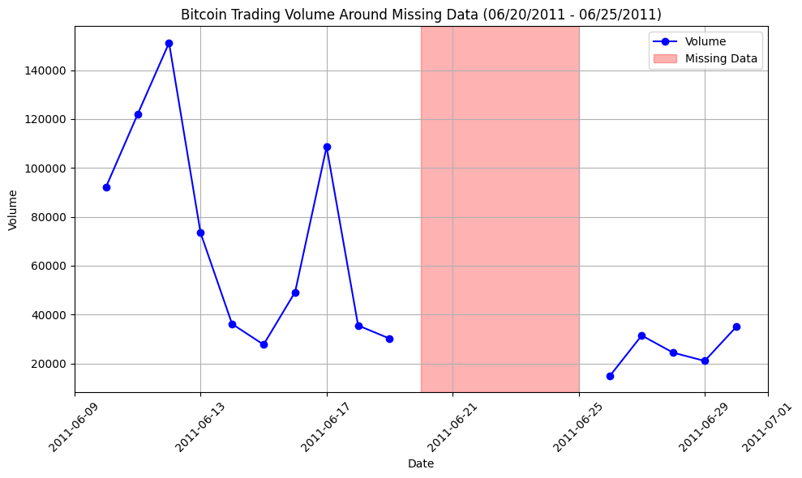
# Calcular la mediana de los valores existentes en 'Vol.'
median_value = bitcoin_data['Vol.'].median()
# Rellenar los valores faltantes con la mediana calculada
bitcoin_data['Vol.'] = bitcoin_data['Vol.'].fillna(median_value)
# Verificar si hay valores faltantes después de la imputación
print(bitcoin_data['Vol.'].isnull().sum())
# Graficar los datos después de la imputación
import matplotlib.pyplot as plt
plt.figure(figsize=(10, 6))
plt.plot(bitcoin_data['Date'], bitcoin_data['Vol.'], color='b', linestyle='-', marker='o', alpha=0.6)
plt.xlabel('Date')
plt.ylabel('Volume')
plt.title('Bitcoin Trading Volume Over Time (After Median Imputation)')
plt.grid(True)
plt.xticks(rotation=45)
plt.tight_layout()
plt.show()
0
import matplotlib.pyplot as plt
start_date = '2011-06-10'
end_date = '2011-06-30'
plot_range = bitcoin_data[(bitcoin_data['Date'] >= start_date) & (bitcoin_data['Date'] <= end_date)]
plt.figure(figsize=(10, 6))
plt.plot(plot_range['Date'], plot_range['Vol.'], marker='o', linestyle='-', color='b', label='Volume (Imputed)')
plt.axvspan('2011-06-20', '2011-06-25', color='red', alpha=0.3, label='Previously Missing Data') # Resaltar el rango de datos faltantes
plt.xlabel('Date')
plt.ylabel('Volume')
plt.title('Bitcoin Trading Volume Around Previously Missing Data (With Median Imputation)')
plt.grid(True)
plt.xticks(rotation=45)
plt.legend()
plt.tight_layout()
plt.show()
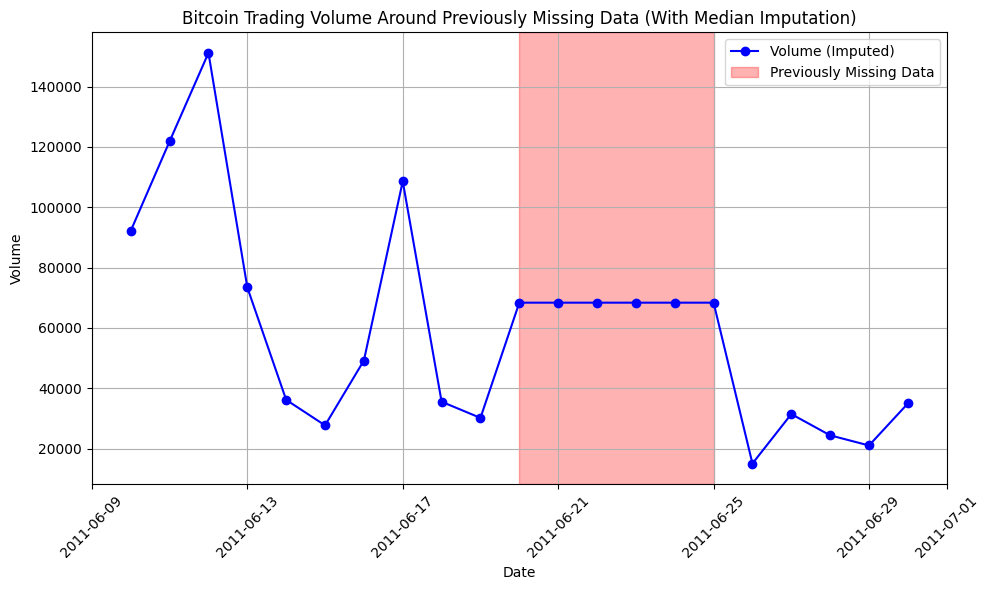
Se realizó el input de los datos faltantes con la mediana, como se puede observar en el gráfico que esta en la parte superiro, el input de vol son los datos que se presentan en la franja roja
Item 3.#
Realice un grafico de velas utilizando la librería Plotly para la serie de tiempo (columna Price). Realice también un histograma con Plotly para representar el volumen tradeado diariamente (Volume)
import plotly.graph_objects as go
fig_candlestick = go.Figure(data=[go.Candlestick(
x=bitcoin_data['Date'],
open=bitcoin_data['Open'],
high=bitcoin_data['High'],
low=bitcoin_data['Low'],
close=bitcoin_data['Price'],
name='Bitcoin Price'
)])
# Configurar el título y etiquetas del gráfico
fig_candlestick.update_layout(
title='Bitcoin Price Candlestick Chart',
xaxis_title='Date',
yaxis_title='Price',
xaxis_rangeslider_visible=False # Ocultar el rango deslizante para claridad
)
# Mostrar el gráfico de velas
fig_candlestick.show()
En el gráfico se puede observar que hasta el 2017 el comportamiento del birtcoin tuve pequeeñas fluctuaciones, por lo tanto se dice que el comportamiento fue relativamente estable. A partir de ese año el precio presento una tendencia alcista. Posteriormente se puede observar un patrón ciclico con crecimiento acelerado y caidas abruptas esto puede ser debido a reacciones de factores externos. En el 2020 se puede observar que la votalidad aumenta y esto pudo ser causado debido a la pandemia, luego de la pandemia queda la votatilidad persiste, se presenta un crecimeinto acumulado con caidad abruptas y en el 2024 presenta una tendencia alcista
import plotly.express as px
import pandas as pd
bitcoin_data['Date'] = pd.to_datetime(bitcoin_data['Date'])
bitcoin_data['Year'] = bitcoin_data['Date'].dt.year
annual_data = bitcoin_data.groupby('Year')['Vol.'].sum().reset_index()
fig_histogram = px.bar(
annual_data,
x='Year',
y='Vol.', # Volumen de transacciones anual
title='Annual Traded Volume of Bitcoin',
labels={'Vol.': 'Total Volume', 'Year': 'Year'}
)
fig_histogram.update_layout(
xaxis_title='Year',
yaxis_title='Volume',
bargap=0.2,
yaxis_type='log'
)
fig_histogram.show()
Se puede observar en la gráfica tiene una tendencia alcista en el # de transacciones por días, cuando llego la pandemia el la cantidad de transacciones empieza a disminuir, hasta el 2022 que aumenta y posteriormente se observa una caída marcada en el 2023 y 2024. Esta fluctuaciones pudieron ser generadas por factores externos
Item 4.#
Realice graficos de subseries considerando agrupación por semana, mes y año. Utilice graficos de series de tiempo y boxplots para analizar estas subseries.
bitcoin_data['Date'] = pd.to_datetime(bitcoin_data['Date'], errors='coerce')
bitcoin_data['Price'] = pd.to_numeric(bitcoin_data['Price'], errors='coerce')
bitcoin_data['Year'] = bitcoin_data['Date'].dt.year
bitcoin_data['Month'] = bitcoin_data['Date'].dt.month
bitcoin_data['Week'] = bitcoin_data['Date'].dt.isocalendar().week
print(bitcoin_data[['Date', 'Year', 'Month', 'Week']].head(10))
Date Year Month Week
4998 2010-07-18 2010 7 28
4997 2010-07-19 2010 7 29
4996 2010-07-20 2010 7 29
4995 2010-07-21 2010 7 29
4994 2010-07-22 2010 7 29
4993 2010-07-23 2010 7 29
4992 2010-07-24 2010 7 29
4991 2010-07-25 2010 7 29
4990 2010-07-26 2010 7 30
4989 2010-07-27 2010 7 30
datos_semanales = bitcoin_data.groupby(['Year', 'Week'])['Price'].mean().reset_index()
datos_mensuales = bitcoin_data.groupby(['Year', 'Month'])['Price'].mean().reset_index()
datos_anuales = bitcoin_data.groupby(['Year'])['Price'].mean().reset_index()
datos_semanales['Price'] = pd.to_numeric(datos_semanales['Price'], errors='coerce')
datos_mensuales['Price'] = pd.to_numeric(datos_mensuales['Price'], errors='coerce')
datos_anuales['Price'] = pd.to_numeric(datos_anuales['Price'], errors='coerce')
datos_semanales = datos_semanales.dropna(subset=['Price'])
datos_mensuales = datos_mensuales.dropna(subset=['Price'])
datos_anuales = datos_anuales.dropna(subset=['Price'])
print(datos_semanales.head(10))
print(datos_mensuales.head(10))
print(datos_anuales.head(10))
Year Week Price
0 2010 28 0.1
1 2010 29 0.1
2 2010 30 0.1
3 2010 31 0.1
4 2010 32 0.1
5 2010 33 0.1
6 2010 34 0.1
7 2010 35 0.1
8 2010 36 0.1
9 2010 37 0.1
Year Month Price
0 2010 7 0.100000
1 2010 8 0.100000
2 2010 9 0.100000
3 2010 10 0.119355
4 2010 11 0.263333
5 2010 12 0.238710
6 2011 1 0.354839
7 2011 2 0.925000
8 2011 3 0.858065
9 2011 4 1.250000
Year Price
0 2010 0.158683
1 2011 5.644658
2 2012 8.291803
3 2013 174.160563
4 2014 517.494737
5 2015 272.024110
6 2016 566.997814
7 2017 913.835135
Serie semanal
import matplotlib.ticker as mticker
# Gráfico Semanal
plt.figure(figsize=(18, 8))
plt.plot(datos_semanales.index, datos_semanales['Price'], marker='o', label='promedio semanal')
plt.title('Serie Semanal', fontsize=14)
plt.xlabel('Index Semanal', fontsize=12)
plt.ylabel('Suma de Price', fontsize=12)
plt.legend()
plt.xticks(rotation=45)
plt.grid(True)
plt.gca().yaxis.set_major_formatter(mticker.FuncFormatter(lambda x, _: f'{x:,.0f}'))
plt.show()
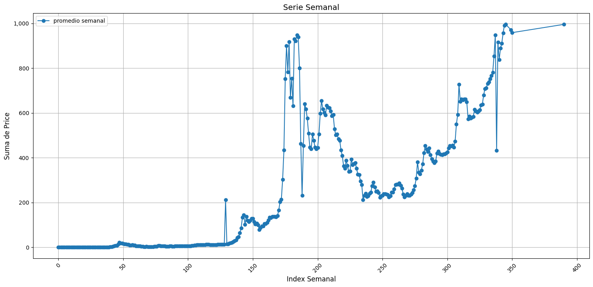
En la grafica de la serie semanal se puede observar una alta volatilidad, pero con tendencia creciente, especialemente al fianlizar la serie, ademas presenta alta variabilidad especialemnte al rededor de la semana 400 se puede observar mayor fluctuaciones. Ademas la grafica muestra patrones ciclicos para realizar un mejor analisis se realiza una descomposici[on para revisar los siguientes componentes: la tendencia de la serie, estacionalidad y resiadual
from statsmodels.tsa.seasonal import seasonal_decompose
import matplotlib.pyplot as plt
decomposition = seasonal_decompose(datos_semanales['Price'], model='additive', period=52)
fig, ax = plt.subplots(4, 1, figsize=(12, 10))
decomposition.observed.plot(ax=ax[0], title='Serie Observada')
decomposition.trend.plot(ax=ax[1], title='Tendencia')
decomposition.seasonal.plot(ax=ax[2], title='Estacionalidad')
decomposition.resid.plot(ax=ax[3], title='Residuo')
plt.tight_layout()
plt.show()
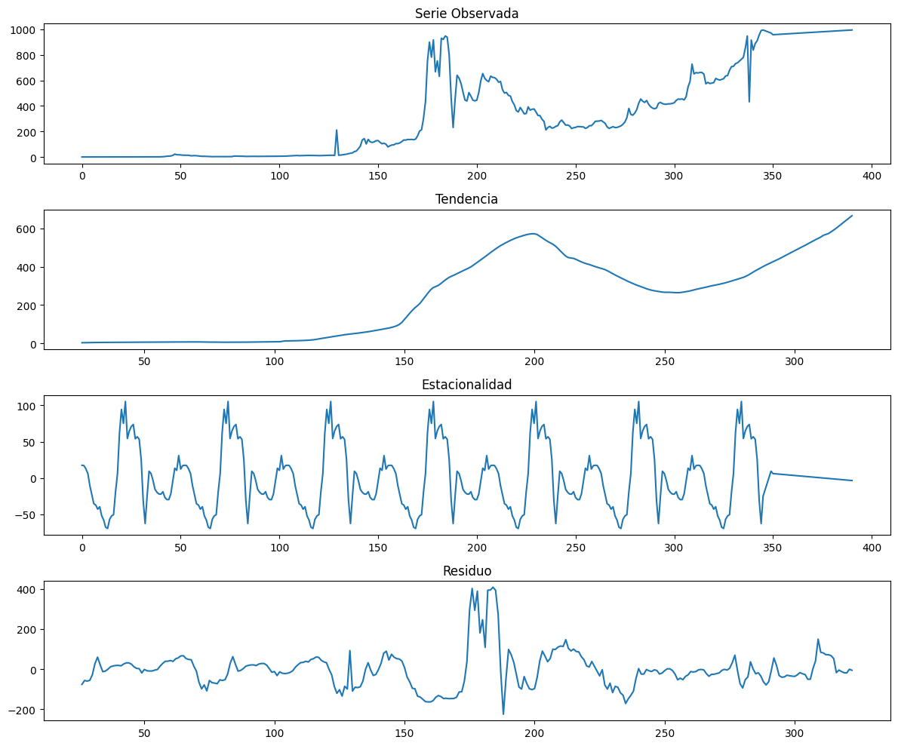
En el grafico de tendencia se puede observar un aunmento gradual, el cual se acelera al rededor de la semana 400, ademas de puede ver que al rededor de la semana 600 hay un pico en el precio del bitcoin. En el grafico se estacionalidad se puede percibir que hay un patron repetitivo. En la grafica se residuo se puede notar que hay eventos los cuales no pueden ser predecidos facilmente con la tendencia y la estacionalidad, por lo menos las oscilaciones en la semana 600 se pueden dar por eventos atipicos.
Serie mensual
# Gráfico Mensual
plt.figure(figsize=(18, 8))
plt.plot(datos_mensuales.index, datos_mensuales['Price'], marker='o', label='promedio Mensual', color='orange')
plt.title('Serie Mensual', fontsize=14)
plt.xlabel('Index Mensual', fontsize=12)
plt.ylabel('Suma de Price', fontsize=12)
plt.legend()
plt.xticks(rotation=45)
plt.grid(True)
plt.gca().yaxis.set_major_formatter(mticker.FuncFormatter(lambda x, _: f'{x:,.0f}'))
plt.show()
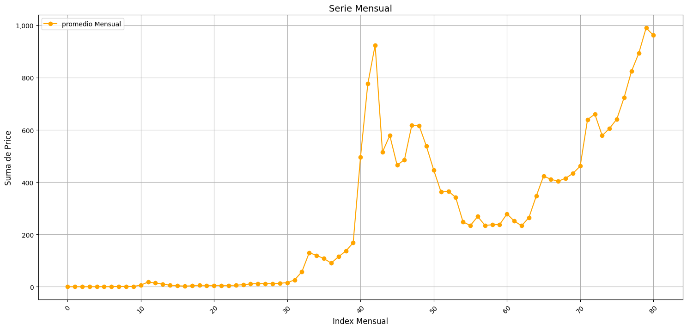
En la serie se puede observar que hay meses donde los precios del bitcoin se mantuvieron bajos, aproximandante apartir de la semana 75 se puede ver un aumento del precio. ademas se presentan varios picos y caidas del rpecio del Bitcoin
from statsmodels.tsa.seasonal import seasonal_decompose
import matplotlib.pyplot as plt
decomposition = seasonal_decompose(datos_mensuales['Price'], model='additive', period=12)
fig, ax = plt.subplots(4, 1, figsize=(12, 10))
decomposition.observed.plot(ax=ax[0], title='Serie Observada')
decomposition.trend.plot(ax=ax[1], title='Tendencia')
decomposition.seasonal.plot(ax=ax[2], title='Estacionalidad')
decomposition.resid.plot(ax=ax[3], title='Residuo')
plt.tight_layout()
plt.show()
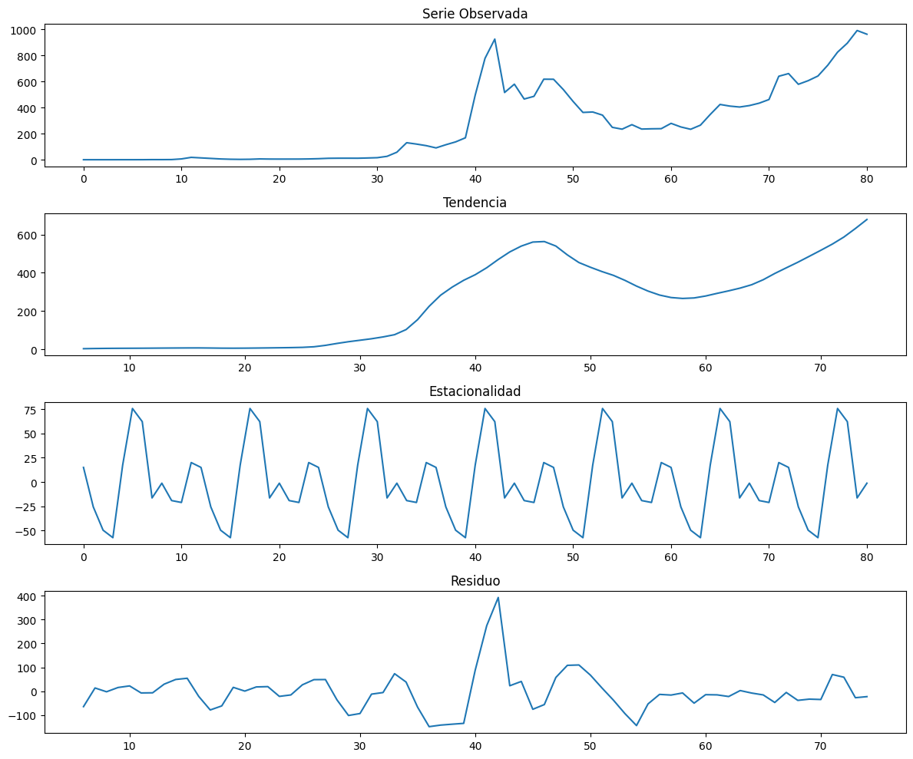
En el grafico de tendencia se puede ver un incremento a lo largo de los meses en el precio del Bitcoin, sobretodo a partir del mes 60. En el grafico de estacionalidad se puede observar que hay un patron estacional con repeticiones En el grafico de residuo se puede observra que estos tienen variaciones, por lo cual se dice que hay volatilidad en los datos la cual no puede ser explicada ni por la tendencia ni la estacionalidad
Serie anual
# Gráfico Anual
plt.figure(figsize=(18, 8))
plt.plot(datos_anuales['Year'], datos_anuales['Price'], marker='o', label='Suma Anual', color='green')
plt.title('Serie Anual', fontsize=14)
plt.xlabel('Anual', fontsize=12)
plt.ylabel('Suma de Price', fontsize=12)
plt.legend()
plt.xticks(rotation=45)
plt.grid(True)
plt.gca().yaxis.set_major_formatter(mticker.FuncFormatter(lambda x, _: f'{x:,.0f}'))
plt.show()
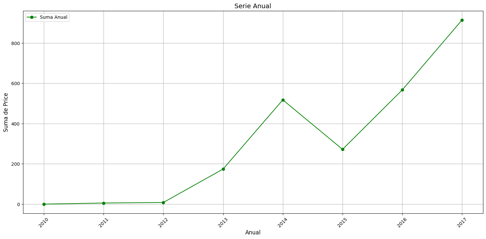
En la grafica se puede observar que desde los primeros años el precio del Bitcoin se mnatuvo bajo y estable, el cual empezo a incremental a partir dle 2016, En el 2017 se muestra un crecimiento significativo hasta el 2021, en este año el bitcoin alcanzo los valores maximos historicos, despuedes de esto se presenta una caida esto pudo ser causado por la pandemia
from statsmodels.tsa.seasonal import seasonal_decompose
import matplotlib.pyplot as plt
decomposition = seasonal_decompose(datos_anuales['Price'], model='additive', period=1)
fig, ax = plt.subplots(4, 1, figsize=(12, 10))
decomposition.observed.plot(ax=ax[0], title='Serie Observada')
decomposition.trend.plot(ax=ax[1], title='Tendencia')
decomposition.seasonal.plot(ax=ax[2], title='Estacionalidad')
decomposition.resid.plot(ax=ax[3], title='Residuo')
plt.tight_layout()
plt.show()
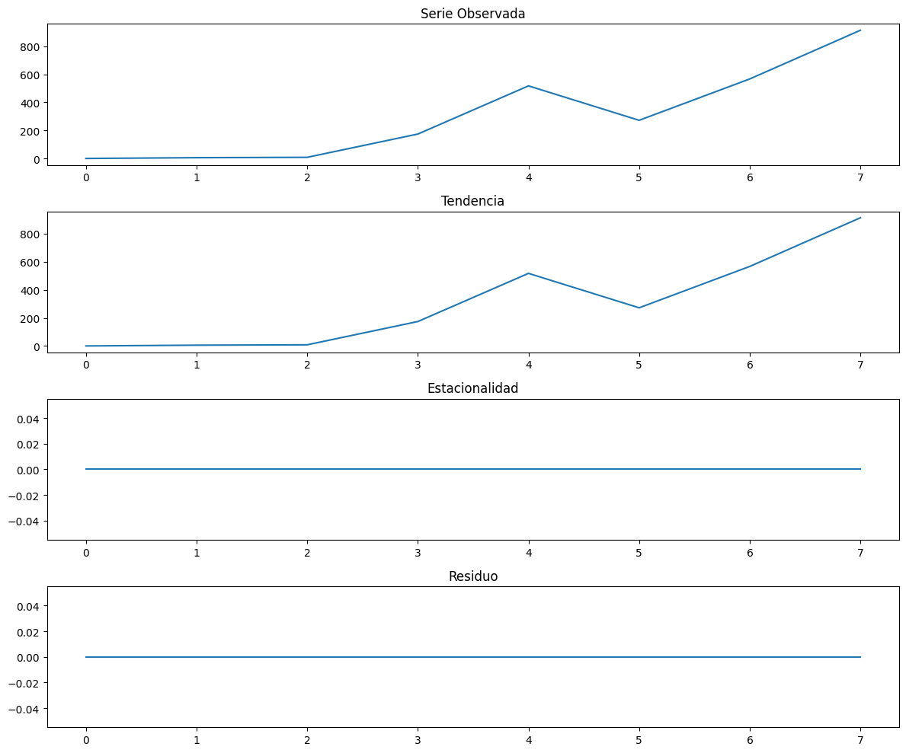
Segun la grafica se puede observar que el Bitcoin a novel anual no sigie patrones estacionales regulares como otras series
Boxplot semanal
import matplotlib.pyplot as plt
plt.figure(figsize=(10, 6))
plt.boxplot(datos_semanales['Price'])
plt.title('Boxplot promedio semanal del precio', fontsize=14)
plt.ylabel('Suma de Price', fontsize=12)
plt.grid(True)
plt.show()
Se puede observar que la mediana de la suma semanal del precio se encuentra en un rango bajo,lo cual indica que la mayoria de semanas el precio del bitcoin fue bajo, Ademas se puede observar gran frecuencia de outliers, esto puede ser porque hubo semanaas en el cual el precio del bitcoin fue mayor que en las demas semanas. los datos son sesgados hacia la derecha.
Boxplot mensual
import matplotlib.pyplot as plt
plt.figure(figsize=(10, 6))
plt.boxplot(datos_mensuales['Price'])
plt.title('Boxplot promedio mensual del precio', fontsize=14)
plt.ylabel('Suma de Price', fontsize=12)
plt.grid(True)
plt.show()
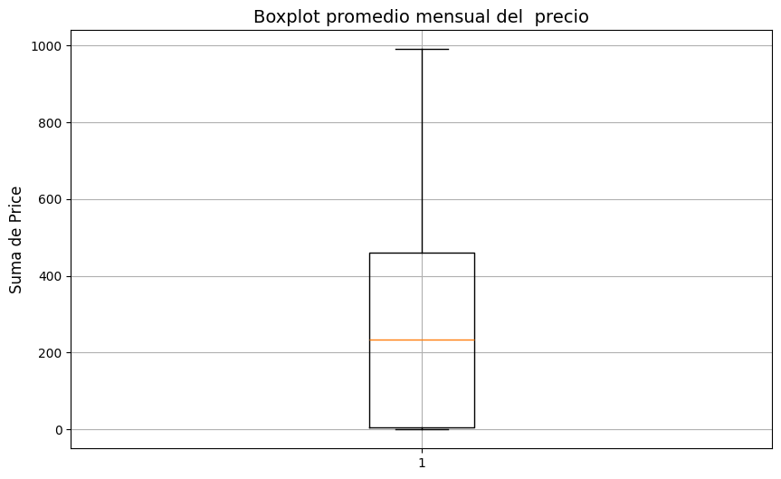
La mediana esta cerca del limite inferior esto es debido a que la gran parte del promedio del precio del bitcoin son bajos, la caja que representa el rango intercuartil muestra que aproximadamente el 50% de los datos estan en un rango estrecho, es decir, la mayoria de meses el precio del bitcoin no varia en gran cantidad. Ademas se observa gran cantidad de valores atipicos hacia arriba, debido a que hay meses en los cuales el valor del bitcoin fue alto en compracion a los otrso meses
import matplotlib.pyplot as plt
plt.figure(figsize=(10, 6))
plt.boxplot(datos_anuales['Price'])
plt.title('Boxplot promedio anual del precio', fontsize=14)
plt.ylabel('Suma de Price', fontsize=12)
plt.grid(True)
plt.show()
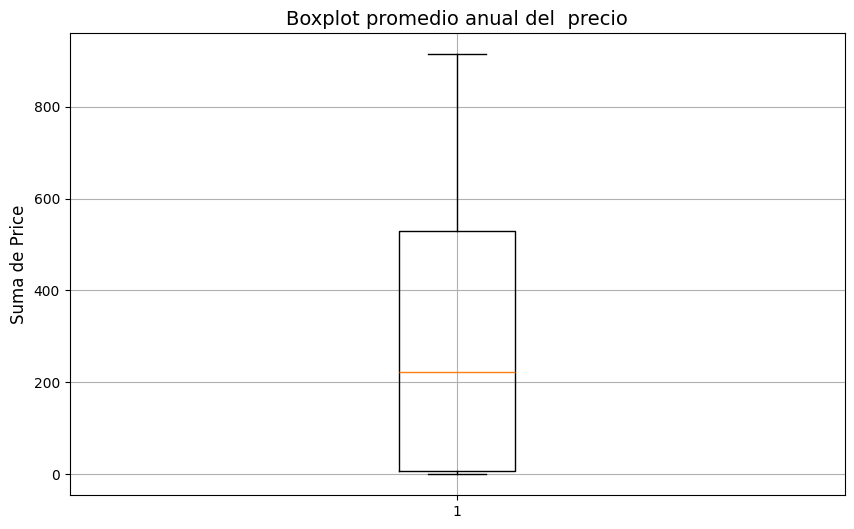
La mediana esta en la parte baja de la caja, debido a que la mayoria de precios anuales tienden a concentrase en valores mas bajos, los bigotes se extienden, lo cual indica que existen valores más altos que aún están dentro del rango normal de la distribución.
Item 5.#
Estudie estacionariedad de la serie de tiempo usando la ACF estudiada durante el curso el curso, asi como tambien los respectivos test estadísticos tales como Ljung-Box y Dickey Fuller. Aplique además las transformaciones necesarias para convertir la serie de tiempo en estacionaria.
import pandas as pd
from matplotlib import pyplot as plt
from statsmodels.graphics.tsaplots import plot_acf, plot_pacf
bitcoin_data['Date'] = pd.to_datetime(bitcoin_data['Date'])
bitcoin_data.set_index('Date', inplace=True)
plt.figure(figsize=(7, 5))
bitcoin_data['Price'].plot(color='b')
plt.title('Bitcoin Price Over Time')
plt.xlabel('Time')
plt.ylabel('Price')
plt.grid(True)
plt.show()
lag = range(0, 31)
bitcoin_acf = [bitcoin_data['Price'].autocorr(l) for l in lag]
plt.figure(figsize=(7, 5))
plt.plot(lag, bitcoin_acf, marker='.', color='b')
plt.title('Autocorrelation Function for Bitcoin Price')
plt.xlabel('Lag in terms of number of days')
plt.ylabel('Autocorrelation')
plt.grid(True)
plt.show()
plt.figure(figsize=(7, 5))
plot_acf(bitcoin_data['Price'], lags=30)
plt.grid(True)
plt.show()
plt.figure(figsize=(7, 5))
plot_pacf(bitcoin_data['Price'], lags=30)
plt.grid(True)
plt.show()
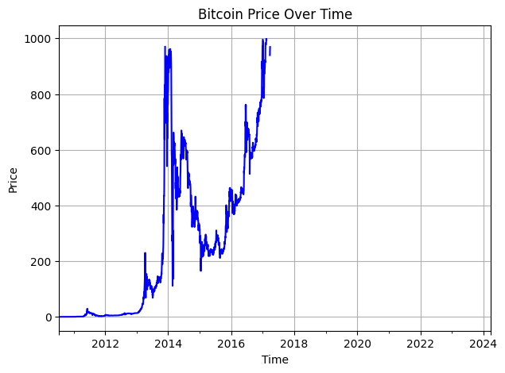
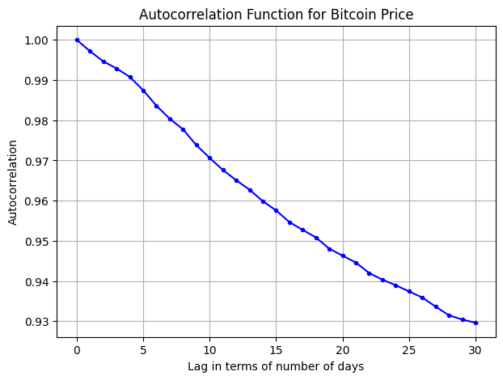
<Figure size 700x500 with 0 Axes>
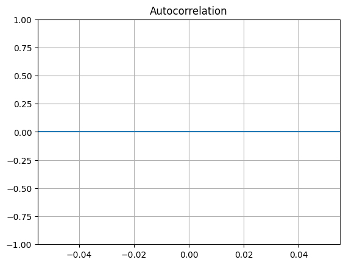
<Figure size 700x500 with 0 Axes>
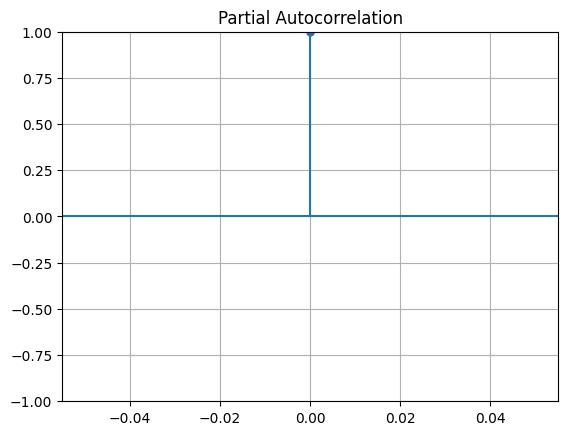
En el gráfico se puede observar que la autocorrelación empiezan en 1, debido a que essta serie esta perfectamente correlacionada, es decir, que los valores del precio del bitcoin estan fuertemente correlacionadas en cortos periodos de tiempo. Asimismo se puede observar que a medida que aumenta el lag, la autocorrelación disminuye de manera lineal. La serie de precios del Bitcoin tiene gran dependencia del pasado.
En el gráfico de autocorrelación parcial los dos primeros lags tienen valores altos signiifcativos, lo cuál indica hay una fuerte correlación directa directa entre el precio actual y los dos valores anteriores. Después de los primeros dos lagas el PACF cae rapidamente a valores cercanos de cero. lo cuál indica que la dependencia direcat disminuye después del segundo lag, lo que sugiere que los lags mas altos no aportan mucha información adicional
import pandas as pd
from matplotlib import pyplot as plt
from statsmodels.tsa import stattools
from pandas.plotting import autocorrelation_plot
bitcoin_data['Date'] = pd.to_datetime(bitcoin_data[['Year', 'Month', 'Week']].astype(str).agg('-'.join, axis=1), errors='coerce')
bitcoin_data.set_index('Date', inplace=True)
bitcoin_data = bitcoin_data.dropna(subset=['Price'])
first_order_diff = bitcoin_data['Price'].diff(1)
fig, ax = plt.subplots(2, sharex=True)
fig.set_size_inches(7, 5)
bitcoin_data['Price'].plot(ax=ax[0], color='b')
ax[0].set_title('Bitcoin Price Over Time')
first_order_diff.plot(ax=ax[1], color='r')
ax[1].set_title('First-order Differences of Bitcoin Price')
plt.tight_layout()
plt.show()
# Test de Ljung-Box para la serie original
acf_bitcoin, confint_bitcoin, qstat_bitcoin, pvalues_bitcoin = stattools.acf(
bitcoin_data['Price'], nlags=20, qstat=True, alpha=0.05
)
alpha = 0.05
print("Ljung-Box Test Results for Bitcoin Prices:")
for l, p_val in enumerate(pvalues_bitcoin):
if p_val > alpha:
print(f'Null hypothesis is accepted at lag = {l} for p-val = {p_val:.4f}')
else:
print(f'Null hypothesis is rejected at lag = {l} for p-val = {p_val:.4f}')
# Test de Ljung-Box para la primera diferencia de la serie
acf_first_diff, confint_first_diff, qstat_first_diff, pvalues_first_diff = stattools.acf(
first_order_diff.iloc[1:], nlags=20, qstat=True, alpha=0.05
)
print("\nLjung-Box Test Results for First Differences of Bitcoin Prices:")
for l, p_val in enumerate(pvalues_first_diff):
if p_val > alpha:
print(f'Null hypothesis is accepted at lag = {l} for p-val = {p_val:.4f}')
else:
print(f'Null hypothesis is rejected at lag = {l} for p-val = {p_val:.4f}')
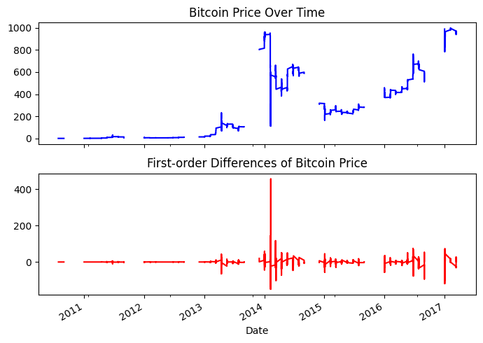
Ljung-Box Test Results for Bitcoin Prices:
Null hypothesis is rejected at lag = 0 for p-val = 0.0000
Null hypothesis is rejected at lag = 1 for p-val = 0.0000
Null hypothesis is rejected at lag = 2 for p-val = 0.0000
Null hypothesis is rejected at lag = 3 for p-val = 0.0000
Null hypothesis is rejected at lag = 4 for p-val = 0.0000
Null hypothesis is rejected at lag = 5 for p-val = 0.0000
Null hypothesis is rejected at lag = 6 for p-val = 0.0000
Null hypothesis is rejected at lag = 7 for p-val = 0.0000
Null hypothesis is rejected at lag = 8 for p-val = 0.0000
Null hypothesis is rejected at lag = 9 for p-val = 0.0000
Null hypothesis is rejected at lag = 10 for p-val = 0.0000
Null hypothesis is rejected at lag = 11 for p-val = 0.0000
Null hypothesis is rejected at lag = 12 for p-val = 0.0000
Null hypothesis is rejected at lag = 13 for p-val = 0.0000
Null hypothesis is rejected at lag = 14 for p-val = 0.0000
Null hypothesis is rejected at lag = 15 for p-val = 0.0000
Null hypothesis is rejected at lag = 16 for p-val = 0.0000
Null hypothesis is rejected at lag = 17 for p-val = 0.0000
Null hypothesis is rejected at lag = 18 for p-val = 0.0000
Null hypothesis is rejected at lag = 19 for p-val = 0.0000
Ljung-Box Test Results for First Differences of Bitcoin Prices:
Null hypothesis is accepted at lag = 0 for p-val = 0.1871
Null hypothesis is rejected at lag = 1 for p-val = 0.0000
Null hypothesis is rejected at lag = 2 for p-val = 0.0000
Null hypothesis is rejected at lag = 3 for p-val = 0.0000
Null hypothesis is rejected at lag = 4 for p-val = 0.0000
Null hypothesis is rejected at lag = 5 for p-val = 0.0000
Null hypothesis is rejected at lag = 6 for p-val = 0.0000
Null hypothesis is rejected at lag = 7 for p-val = 0.0000
Null hypothesis is rejected at lag = 8 for p-val = 0.0000
Null hypothesis is rejected at lag = 9 for p-val = 0.0000
Null hypothesis is rejected at lag = 10 for p-val = 0.0000
Null hypothesis is rejected at lag = 11 for p-val = 0.0000
Null hypothesis is rejected at lag = 12 for p-val = 0.0000
Null hypothesis is rejected at lag = 13 for p-val = 0.0000
Null hypothesis is rejected at lag = 14 for p-val = 0.0000
Null hypothesis is rejected at lag = 15 for p-val = 0.0000
Null hypothesis is rejected at lag = 16 for p-val = 0.0000
Null hypothesis is rejected at lag = 17 for p-val = 0.0000
Null hypothesis is rejected at lag = 18 for p-val = 0.0000
Null hypothesis is rejected at lag = 19 for p-val = 0.0000
Todos los p-values son 0, lo cuál indica que se rechaza la hipotesis nula (No hay autocorrelación en los lags) en cada lag, lo cuál indica indica que las serie original de precios tienen autocorrelación significativas. La presencia de autocorrelación
import pandas as pd
import matplotlib.pyplot as plt
from statsmodels.tsa import stattools
missing = pd.isnull(bitcoin_data['Price'])
# Filtrar los datos para eliminar valores faltantes
bitcoin_data = bitcoin_data.loc[~missing, :]
# Graficar los precios de Bitcoin
fig = plt.figure(figsize=(5.5, 5.5))
ax = fig.add_subplot(1,1,1)
bitcoin_data['Price'].plot(ax=ax)
ax.set_title('Bitcoin Price Time Series')
# Prueba de Dickey-Fuller aumentada
adf_result = stattools.adfuller(bitcoin_data['Price'], autolag='AIC')
print('p-value of the ADF test for Bitcoin price:', adf_result[1])
p-value of the ADF test for Bitcoin price: 0.8591968263291794
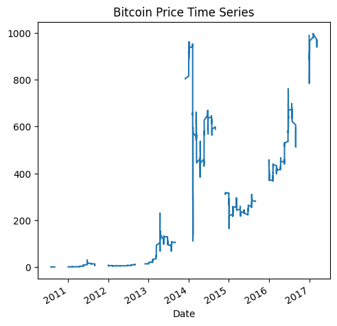
El p-value de la prueba de Dickey fuller es mayor al 5%, lo cuál quiere decir que la serie no es estacionaria, lo cuál indica que las serie sigue una tendencia o tiene una estructura no constante a lo largo del tiempo.
import pandas as pd
import matplotlib.pyplot as plt
bitcoin_data['Price_diff'] = bitcoin_data['Price'].diff()
plt.figure(figsize=(10, 6))
plt.plot(bitcoin_data['Price_diff'], color='red')
plt.title("First-order Differenced Bitcoin Price")
plt.xlabel("Date")
plt.ylabel("Price Difference")
plt.show()
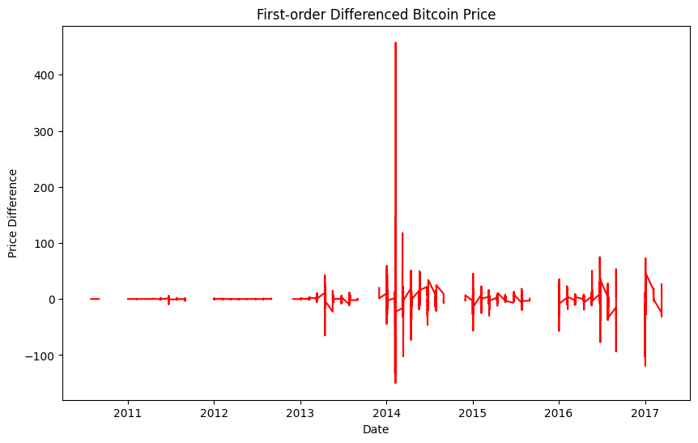
from statsmodels.tsa.stattools import adfuller
price_diff = bitcoin_data['Price_diff'].dropna()
result = adfuller(price_diff)
print(f'p-value: {result[1]}')
# Interpretación
if result[1] < 0.05:
print("La serie diferenciada es estacionaria (p-valor < 0.05).")
else:
print("La serie diferenciada no es estacionaria (p-valor >= 0.05).")
p-value: 3.157009552127737e-16
La serie diferenciada es estacionaria (p-valor < 0.05).
print(bitcoin_data)
Price Open High Low Vol. Change % Year Month \
Date
2010-07-28 0.1 0.0 0.1 0.1 80.0 0.00% 2010 7
2010-07-29 0.1 0.1 0.1 0.1 570.0 0.00% 2010 7
2010-07-29 0.1 0.1 0.1 0.1 260.0 0.00% 2010 7
2010-07-29 0.1 0.1 0.1 0.1 580.0 0.00% 2010 7
2010-07-29 0.1 0.1 0.1 0.1 2160.0 0.00% 2010 7
... ... ... ... ... ... ... ... ...
2017-02-07 995.4 996.5 1,007.6 975.1 32910.0 -0.12% 2017 2
2017-03-11 971.4 1,071.7 1,103.6 940.2 210420.0 -9.36% 2017 3
2017-03-12 939.7 1,035.0 1,038.4 927.3 132600.0 -9.21% 2017 3
2017-03-12 966.3 939.7 996.0 890.4 127050.0 2.83% 2017 3
2017-03-12 969.4 966.3 1,004.3 946.7 85330.0 0.32% 2017 3
Week Price_diff
Date
2010-07-28 28 NaN
2010-07-29 29 0.0
2010-07-29 29 0.0
2010-07-29 29 0.0
2010-07-29 29 0.0
... ... ...
2017-02-07 7 -1.1
2017-03-11 11 -24.0
2017-03-12 12 -31.7
2017-03-12 12 26.6
2017-03-12 12 3.1
[2382 rows x 10 columns]
El gráfico de la serie diferenciada, no presenta una tendencia persistente. el p-value es menor del 5%, lo cuál confirma que la serie diferenciada es estacionaria.
Item 6.#
Mediante agregación por grupos analice el comportamiento de la media y desviación estándar, agrupando por semanas, días, meses. Además, para estas agrupaciones, calcule estadísticos móviles. Dibuje la distribución de frecuencias para diferentes lags como se realizó en las notas del curos
6.1 Comportamiento de la media
import pandas as pd
import matplotlib.pyplot as plt
bitcoin_data['Price_diff'] = pd.to_numeric(bitcoin_data['Price_diff'], errors='coerce')
bitcoin_data = bitcoin_data.dropna(subset=['Price_diff'])
Agrupación
datos_diarios = bitcoin_data['Price_diff'].resample('D').agg(['mean', 'std'])
datos_diarios = datos_diarios.dropna(subset=['mean', 'std'])
print(datos_diarios.head(10))
mean std
Date
2010-07-29 0.000000 0.000000
2010-07-30 0.000000 0.000000
2010-08-31 0.000000 0.000000
2011-01-01 0.000000 0.000000
2011-01-02 0.014286 0.037796
2011-01-03 0.000000 0.057735
2011-01-04 0.014286 0.037796
2011-02-05 0.066667 0.081650
2011-02-06 0.014286 0.106904
2011-02-07 -0.014286 0.069007
datos_semanales = bitcoin_data['Price_diff'].resample('W').agg(['mean', 'std'])
datos_semanales = datos_semanales.dropna(subset=['mean', 'std'])
print(datos_semanales.head(10))
mean std
Date
2010-08-01 0.000000 0.000000
2010-09-05 0.000000 0.000000
2011-01-02 0.007143 0.026726
2011-01-09 0.006667 0.045774
2011-02-06 0.038462 0.096077
2011-02-13 -0.006667 0.079881
2011-03-13 -0.003226 0.040693
2011-04-17 0.090000 0.184484
2011-05-22 0.167742 0.696365
2011-06-26 0.246667 2.913315
datos_mensuales = bitcoin_data['Price_diff'].resample('ME').agg(['mean', 'std'])
datos_mensuales = datos_mensuales.dropna(subset=['mean', 'std'])
print(datos_mensuales.head(10))
mean std
Date
2010-07-31 0.000000 0.000000
2010-08-31 0.000000 0.000000
2011-01-31 0.006897 0.037139
2011-02-28 0.014286 0.089087
2011-03-31 -0.003226 0.040693
2011-04-30 0.090000 0.184484
2011-05-31 0.167742 0.696365
2011-06-30 0.246667 2.913315
2011-07-31 -0.087097 0.550601
2011-08-31 -0.785714 1.816066
print(bitcoin_data)
Price Open High Low Vol. Change % Year Month \
Date
2010-07-29 0.1 0.1 0.1 0.1 570.0 0.00% 2010 7
2010-07-29 0.1 0.1 0.1 0.1 260.0 0.00% 2010 7
2010-07-29 0.1 0.1 0.1 0.1 580.0 0.00% 2010 7
2010-07-29 0.1 0.1 0.1 0.1 2160.0 0.00% 2010 7
2010-07-29 0.1 0.1 0.1 0.1 2400.0 0.00% 2010 7
... ... ... ... ... ... ... ... ...
2017-02-07 995.4 996.5 1,007.6 975.1 32910.0 -0.12% 2017 2
2017-03-11 971.4 1,071.7 1,103.6 940.2 210420.0 -9.36% 2017 3
2017-03-12 939.7 1,035.0 1,038.4 927.3 132600.0 -9.21% 2017 3
2017-03-12 966.3 939.7 996.0 890.4 127050.0 2.83% 2017 3
2017-03-12 969.4 966.3 1,004.3 946.7 85330.0 0.32% 2017 3
Week Price_diff
Date
2010-07-29 29 0.0
2010-07-29 29 0.0
2010-07-29 29 0.0
2010-07-29 29 0.0
2010-07-29 29 0.0
... ... ...
2017-02-07 7 -1.1
2017-03-11 11 -24.0
2017-03-12 12 -31.7
2017-03-12 12 26.6
2017-03-12 12 3.1
[2381 rows x 10 columns]
import matplotlib.pyplot as plt
plt.figure(figsize=(12, 6))
plt.plot(datos_diarios['mean'], label='Media Diaria Diferenciada', color='orange', alpha=0.5)
plt.plot(datos_semanales['mean'], label='Media Semanal Diferenciada', color='blue')
plt.plot(datos_mensuales['mean'], label='Media Mensual Diferenciada', color='green')
plt.xlabel('Fecha')
plt.ylabel('Media Diferenciada del Precio')
plt.title('Media Diferenciada del Precio de Bitcoin')
plt.legend()
plt.show()
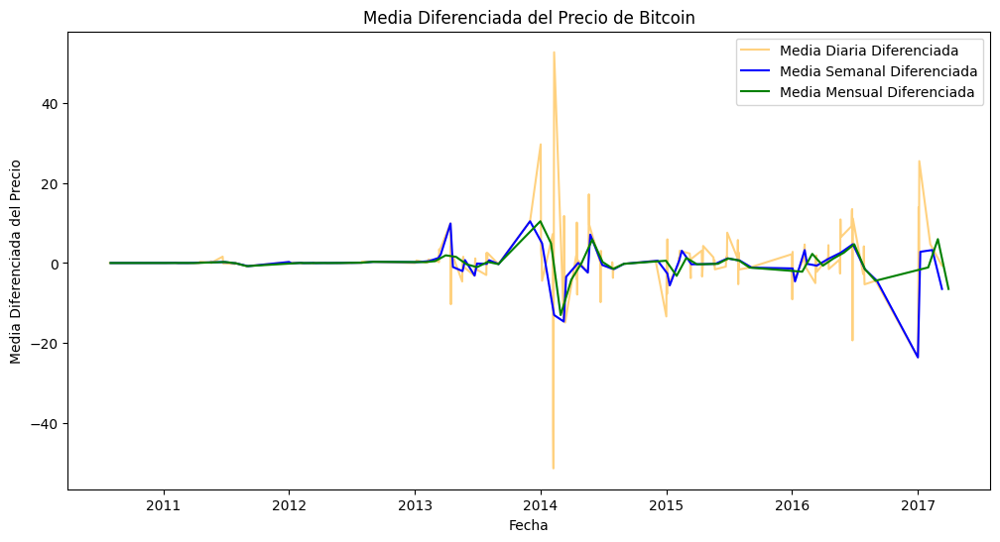
En la gráfica se puede observar que aproximadamente desde el 2010 hasta el 2017 las medias muestran un comportamiento estable, el cuál llega a ser cercano a cero. A partir del 2017 se puede ver la volatilidad en los precios del Bitcoin. Además la media diaria muestra una mayor fluctuación a corto plazo, en cambio la media semanal y mensual presenta que el precio del bitcoin estuvo mas suavizado
plt.figure(figsize=(12, 6))
plt.plot(datos_diarios['std'], label='Desviación Estándar Diaria Diferenciada', color='orange', alpha=0.5)
plt.plot(datos_semanales['std'], label='Desviación Estándar Semanal Diferenciada', color='blue')
plt.plot(datos_mensuales['std'], label='Desviación Estándar Mensual Diferenciada', color='green')
plt.xlabel('Fecha')
plt.ylabel('Desviación Estándar Diferenciada del Precio')
plt.title('Desviación Estándar Diferenciada del Precio de Bitcoin')
plt.legend()
plt.show()
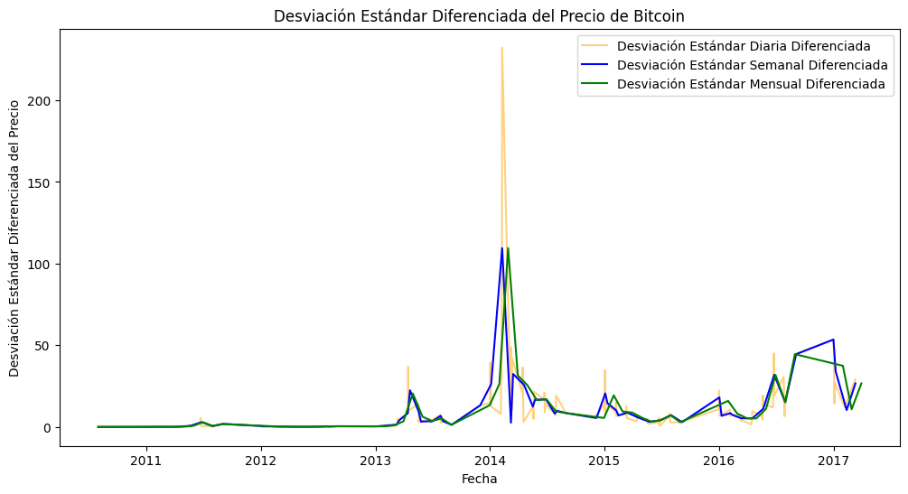
Desde 2010 hasta 2017 el precio del Bitocin no representaba gran variabilidad, además se puede observar que apartr del 2017 hay presencia de picos, debido a la alta volatilidad del Bitcoin, además como se observo en la gráfica de promedio, las graficas diarias muestran cambios mas abruptos y con alta volatilidad
En los gráficos se puede observar que hay mucha variabilidad a corto plazo, en cambio la media semanal suaviza algunas fluctuaciones y en la mensual si se puede observar aún mas sauvizada.En el 2020, parece haber mayor valitilidad
import matplotlib.pyplot as plt
# Desactivar temporalmente el uso de LaTeX
plt.rcParams['text.usetex'] = False
fig, axs = plt.subplots(3, 2, figsize=(12, 15), constrained_layout=True)
axs[0, 0].hist(datos_diarios['mean'].dropna(), bins=30, alpha=0.7, color='blue')
axs[0, 0].set_title('Histograma de Media Diaria')
axs[0, 1].hist(datos_diarios['std'].dropna(), bins=30, alpha=0.7, color='red')
axs[0, 1].set_title('Histograma de Desviación Estándar Diaria')
axs[1, 0].hist(datos_semanales['mean'].dropna(), bins=30, alpha=0.7, color='blue')
axs[1, 0].set_title('Histograma de Media Semanal')
axs[1, 1].hist(datos_semanales['std'].dropna(), bins=30, alpha=0.7, color='red')
axs[1, 1].set_title('Histograma de Desviación Estándar Semanal')
axs[2, 0].hist(datos_mensuales['mean'].dropna(), bins=30, alpha=0.7, color='blue')
axs[2, 0].set_title('Histograma de Media Mensual')
axs[2, 1].hist(datos_mensuales['std'].dropna(), bins=30, alpha=0.7, color='red')
axs[2, 1].set_title('Histograma de Desviación Estándar Mensual')
fig.savefig('output_histogramas.png', bbox_inches='tight')
plt.show()
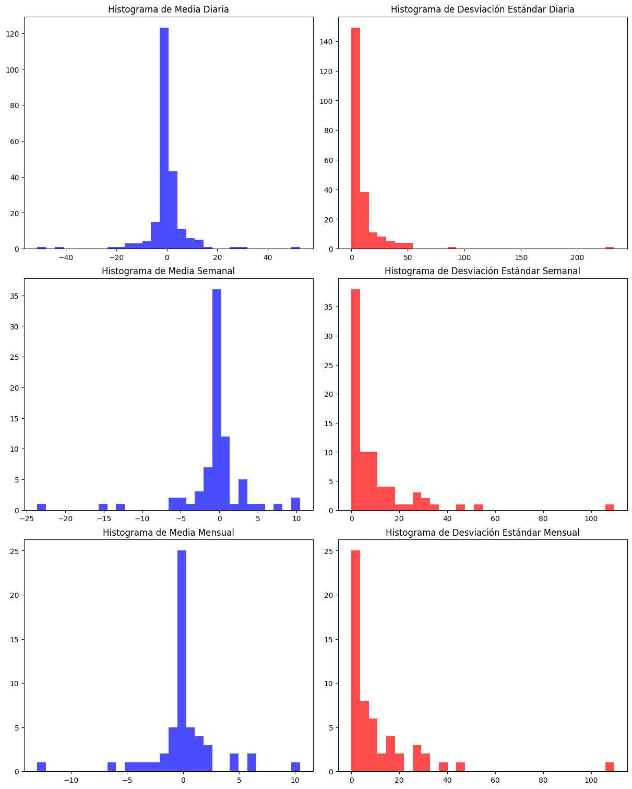
Los gráficos de la desviación esatandar muestra distribuciones sesgadas hacia la derecha, es decir que la mayoría de días,semanas o meses presentan una baja variabilidad, además se puede observar que la dispersión tiende a aumentar cuando es mayor el peridod de agrupación
En los gráficos de la media los histogramas tienen una alta concentración en los valores de cero, además se observan colas en los histogramas lo cuál se podría decir que es por presencia de datos atípicos
Item 7.#
Aplique las medias móviles M(2) t (t,t+1) , M(4) t , M(4) t , M(3) (t−1,t+1) t y M(3) a la serie del precio de cierre de BTC-USD. Posteriormente, úselas para remover tendencia y aplique la prueba de Dickey Fuller y LJung Box para verificar si se logró estacionariedad
M(2)
#M(2)
bitcoin_data['M2'] = bitcoin_data['Price'].rolling(window=2).mean()
print(bitcoin_data[['Price', 'M2']].head(10))
Price M2
Date
2010-07-29 0.1 NaN
2010-07-29 0.1 0.1
2010-07-29 0.1 0.1
2010-07-29 0.1 0.1
2010-07-29 0.1 0.1
2010-07-29 0.1 0.1
2010-07-29 0.1 0.1
2010-07-30 0.1 0.1
2010-07-30 0.1 0.1
2010-07-30 0.1 0.1
# (M2(t, t+1))
bitcoin_data['M_2_t_t1'] = (bitcoin_data['Price'] + bitcoin_data['Price'].shift(-1)) / 2
print(bitcoin_data[['Price', 'M_2_t_t1']].head(10))
Price M_2_t_t1
Date
2010-07-29 0.1 0.1
2010-07-29 0.1 0.1
2010-07-29 0.1 0.1
2010-07-29 0.1 0.1
2010-07-29 0.1 0.1
2010-07-29 0.1 0.1
2010-07-29 0.1 0.1
2010-07-30 0.1 0.1
2010-07-30 0.1 0.1
2010-07-30 0.1 0.1
#M(4)
bitcoin_data['M_4'] = bitcoin_data['Price'].rolling(window=4).mean()
print(bitcoin_data[['Price', 'M_4']].head(10))
Price M_4
Date
2010-07-29 0.1 NaN
2010-07-29 0.1 NaN
2010-07-29 0.1 NaN
2010-07-29 0.1 0.1
2010-07-29 0.1 0.1
2010-07-29 0.1 0.1
2010-07-29 0.1 0.1
2010-07-30 0.1 0.1
2010-07-30 0.1 0.1
2010-07-30 0.1 0.1
# (M_4_(t, t+1))
bitcoin_data['M_4_t_t1'] = (
bitcoin_data['Price'].rolling(window=4).mean() +
bitcoin_data['Price'].shift(-4).rolling(window=4).mean()
) / 2
print(bitcoin_data[['Price', 'M_4', 'M_4_t_t1']].head(10))
Price M_4 M_4_t_t1
Date
2010-07-29 0.1 NaN NaN
2010-07-29 0.1 NaN NaN
2010-07-29 0.1 NaN NaN
2010-07-29 0.1 0.1 0.1
2010-07-29 0.1 0.1 0.1
2010-07-29 0.1 0.1 0.1
2010-07-29 0.1 0.1 0.1
2010-07-30 0.1 0.1 0.1
2010-07-30 0.1 0.1 0.1
2010-07-30 0.1 0.1 0.1
#Relleno de valores de NaN, debido a que no hay suficieentes datos
bitcoin_data['M_4'] = bitcoin_data['M_4'].fillna(0)
bitcoin_data['M_4_t_t1'] = bitcoin_data['M_4_t_t1'].fillna(0)
print(bitcoin_data[['Price', 'M_4', 'M_4_t_t1']].head(10))
Price M_4 M_4_t_t1
Date
2010-07-29 0.1 0.0 0.0
2010-07-29 0.1 0.0 0.0
2010-07-29 0.1 0.0 0.0
2010-07-29 0.1 0.1 0.1
2010-07-29 0.1 0.1 0.1
2010-07-29 0.1 0.1 0.1
2010-07-29 0.1 0.1 0.1
2010-07-30 0.1 0.1 0.1
2010-07-30 0.1 0.1 0.1
2010-07-30 0.1 0.1 0.1
M(3)
bitcoin_data['M_3'] = bitcoin_data['Price'].rolling(window=3).mean()
print(bitcoin_data[['Price', 'M_3']].head(10))
Price M_3
Date
2010-07-29 0.1 NaN
2010-07-29 0.1 NaN
2010-07-29 0.1 0.1
2010-07-29 0.1 0.1
2010-07-29 0.1 0.1
2010-07-29 0.1 0.1
2010-07-29 0.1 0.1
2010-07-30 0.1 0.1
2010-07-30 0.1 0.1
2010-07-30 0.1 0.1
#M3 (t-1, T+1)
bitcoin_data['M_3_t-1_t+1'] = bitcoin_data['Price'].shift(2)
# Mostrar algunos resultados
print(bitcoin_data[['Price', 'M_3_t-1_t+1']].head(10))
# Obtener el último valor calculado como pronóstico para el siguiente periodo
last_value_pred = bitcoin_data['M_3_t-1_t+1'].iloc[-1]
print("pronosticado para el siguiente periodo:", last_value_pred)
Price M_3_t-1_t+1
Date
2010-07-29 0.1 NaN
2010-07-29 0.1 NaN
2010-07-29 0.1 0.1
2010-07-29 0.1 0.1
2010-07-29 0.1 0.1
2010-07-29 0.1 0.1
2010-07-29 0.1 0.1
2010-07-30 0.1 0.1
2010-07-30 0.1 0.1
2010-07-30 0.1 0.1
pronosticado para el siguiente periodo: 939.7
#Relleno de valores de NaN, debido a que no hay suficieentes datos
bitcoin_data['M_3'] = bitcoin_data['M_3'].fillna(0)
bitcoin_data['M_3_t-1_t+1'] = bitcoin_data['M_3_t-1_t+1'].fillna(0)
print(bitcoin_data[['Price', 'M_4', 'M_4_t_t1']].head(10))
Price M_4 M_4_t_t1
Date
2010-07-29 0.1 0.0 0.0
2010-07-29 0.1 0.0 0.0
2010-07-29 0.1 0.0 0.0
2010-07-29 0.1 0.1 0.1
2010-07-29 0.1 0.1 0.1
2010-07-29 0.1 0.1 0.1
2010-07-29 0.1 0.1 0.1
2010-07-30 0.1 0.1 0.1
2010-07-30 0.1 0.1 0.1
2010-07-30 0.1 0.1 0.1
Remover tendencia de las medias moviles
Prueba de Dickey Fuller
bitcoin_data['Detrended_M2'] = bitcoin_data['Price'] - bitcoin_data['M2']
bitcoin_data['Detrended_M3'] = bitcoin_data['Price'] - bitcoin_data['M_3']
bitcoin_data['Detrended_M4'] = bitcoin_data['Price'] - bitcoin_data['M_4']
bitcoin_data['Detrended_M2_special'] = bitcoin_data['Price'] - bitcoin_data['M_2_t_t1']
bitcoin_data['Detrended_M3_special'] = bitcoin_data['Price'] - bitcoin_data['M_3_t-1_t+1']
bitcoin_data['Detrended_M4_special'] = bitcoin_data['Price'] - bitcoin_data['M_4_t_t1']
# Verifica que las columnas existan ahora
print(bitcoin_data[['Detrended_M2', 'Detrended_M3', 'Detrended_M4',
'Detrended_M2_special', 'Detrended_M3_special', 'Detrended_M4_special']].head(10))
Detrended_M2 Detrended_M3 Detrended_M4 Detrended_M2_special \
Date
2010-07-29 NaN 0.1 0.1 0.0
2010-07-29 0.0 0.1 0.1 0.0
2010-07-29 0.0 0.0 0.1 0.0
2010-07-29 0.0 0.0 0.0 0.0
2010-07-29 0.0 0.0 0.0 0.0
2010-07-29 0.0 0.0 0.0 0.0
2010-07-29 0.0 0.0 0.0 0.0
2010-07-30 0.0 0.0 0.0 0.0
2010-07-30 0.0 0.0 0.0 0.0
2010-07-30 0.0 0.0 0.0 0.0
Detrended_M3_special Detrended_M4_special
Date
2010-07-29 0.1 0.1
2010-07-29 0.1 0.1
2010-07-29 0.0 0.1
2010-07-29 0.0 0.0
2010-07-29 0.0 0.0
2010-07-29 0.0 0.0
2010-07-29 0.0 0.0
2010-07-30 0.0 0.0
2010-07-30 0.0 0.0
2010-07-30 0.0 0.0
print(bitcoin_data.columns)
Index(['Price', 'Open', 'High', 'Low', 'Vol.', 'Change %', 'Year', 'Month',
'Week', 'Price_diff', 'M2', 'M_2_t_t1', 'M_4', 'M_4_t_t1', 'M_3',
'M_3_t-1_t+1', 'Detrended_M2', 'Detrended_M3', 'Detrended_M4',
'Detrended_M2_special', 'Detrended_M3_special', 'Detrended_M4_special'],
dtype='object')
from statsmodels.tsa.stattools import adfuller
series_to_test = [
'Detrended_M2', 'Detrended_M3', 'Detrended_M4',
'Detrended_M2_special', 'Detrended_M3_special', 'Detrended_M4_special'
]
for series in series_to_test:
result = adfuller(bitcoin_data[series].dropna())
print(f"Prueba de Dickey-Fuller para {series}:")
print("Estadístico:", result[0])
print("Valor p:", result[1])
print("Conclusión:", "Estacionaria" if result[1] < 0.05 else "No Estacionaria")
print("-" * 50)
Prueba de Dickey-Fuller para Detrended_M2:
Estadístico: -9.513927738600664
Valor p: 3.1945260240200377e-16
Conclusión: Estacionaria
--------------------------------------------------
Prueba de Dickey-Fuller para Detrended_M3:
Estadístico: -11.242953710021892
Valor p: 1.7882520687333012e-20
Conclusión: Estacionaria
--------------------------------------------------
Prueba de Dickey-Fuller para Detrended_M4:
Estadístico: -9.853394619613052
Valor p: 4.424267471652099e-17
Conclusión: Estacionaria
--------------------------------------------------
Prueba de Dickey-Fuller para Detrended_M2_special:
Estadístico: -9.513927738600692
Valor p: 3.194526024019485e-16
Conclusión: Estacionaria
--------------------------------------------------
Prueba de Dickey-Fuller para Detrended_M3_special:
Estadístico: -10.04374523800085
Valor p: 1.472939164101192e-17
Conclusión: Estacionaria
--------------------------------------------------
Prueba de Dickey-Fuller para Detrended_M4_special:
Estadístico: -0.5973452221109983
Valor p: 0.8715807702262314
Conclusión: No Estacionaria
--------------------------------------------------
Todas las pruebas, tienen un valor de P bajo, por lo tanto se rechaza la hipótesis nula de no estacionariedad, es decir que la serie es estacionaria
from statsmodels.stats.diagnostic import acorr_ljungbox
series_to_test = [
'Detrended_M2', 'Detrended_M3', 'Detrended_M4',
'Detrended_M2_special', 'Detrended_M3_special', 'Detrended_M4_special'
]
for series in series_to_test:
ljung_box_result = acorr_ljungbox(bitcoin_data[series].dropna(), lags=[10], return_df=True)
print(f"Prueba de Ljung-Box para {series}:")
print(ljung_box_result)
print("-" * 50)
Prueba de Ljung-Box para Detrended_M2:
lb_stat lb_pvalue
10 317.309018 3.387185e-62
--------------------------------------------------
Prueba de Ljung-Box para Detrended_M3:
lb_stat lb_pvalue
10 669.847103 1.859189e-137
--------------------------------------------------
Prueba de Ljung-Box para Detrended_M4:
lb_stat lb_pvalue
10 946.572168 6.003815e-197
--------------------------------------------------
Prueba de Ljung-Box para Detrended_M2_special:
lb_stat lb_pvalue
10 317.309018 3.387185e-62
--------------------------------------------------
Prueba de Ljung-Box para Detrended_M3_special:
lb_stat lb_pvalue
10 854.276817 4.388196e-177
--------------------------------------------------
Prueba de Ljung-Box para Detrended_M4_special:
lb_stat lb_pvalue
10 1618.537869 0.0
--------------------------------------------------
En todas las pruebas realizadas se puede observar autocorrelación significativa, debido a que los valores del P son pequeños
Item 8.#
Realice descomposición de la serie temporal del precio de cierre de BTC-USD usando medias moviles y además usando la librería statsmodels.tsa. Verifique al final independencia de los residuos mediante la prueba de LJung Box.
#Descomposición usando medias moviles
import pandas as pd
import matplotlib.pyplot as plt
bitcoin_data['Tendencia'] = bitcoin_data['Price'].rolling(window=6, center=True).mean()
# Calcular los residuos (componente aleatorio)
bitcoin_data['Residuos'] = bitcoin_data['Price'] - bitcoin_data['Tendencia']
# Graficar los componentes
plt.figure(figsize=(12, 8))
plt.subplot(3, 1, 1)
plt.plot(bitcoin_data['Price'], label='Original')
plt.title('Serie Original')
plt.legend()
plt.subplot(3, 1, 2)
plt.plot(bitcoin_data['Tendencia'], label='Tendencia', color='orange')
plt.title('Tendencia (Medias Móviles)')
plt.legend()
plt.subplot(3, 1, 3)
plt.plot(bitcoin_data['Residuos'], label='Residuos', color='green')
plt.title('Residuos')
plt.legend()
plt.tight_layout()
plt.show()
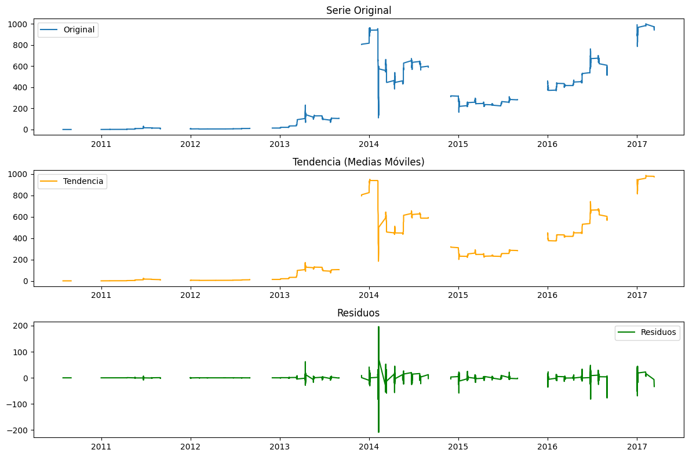
La media movil de 6, captura la mayoría de fluctuaciones y suaviza las pequeñas variaciones, además en el gráfico se residuos muestra que desde el 2021 hasta 2023 hay peridodos que no estan explocados por la tendencia suavizada
from statsmodels.tsa.seasonal import seasonal_decompose
decomposition = seasonal_decompose(bitcoin_data['Price'], model='additive', period=6)
tendencia = decomposition.trend
estacionalidad = decomposition.seasonal
residuos = decomposition.resid
# Graficar los componentes
plt.figure(figsize=(12, 8))
plt.subplot(4, 1, 1)
plt.plot(bitcoin_data['Price'], label='Original')
plt.title('Serie Original')
plt.legend()
plt.subplot(4, 1, 2)
plt.plot(tendencia, label='Tendencia', color='orange')
plt.title('Tendencia (Descomposición Additiva)')
plt.legend()
plt.subplot(4, 1, 3)
plt.plot(estacionalidad, label='Estacionalidad', color='blue')
plt.title('Estacionalidad')
plt.legend()
plt.subplot(4, 1, 4)
plt.plot(residuos, label='Residuos', color='green')
plt.title('Residuos')
plt.legend()
plt.tight_layout()
plt.show()
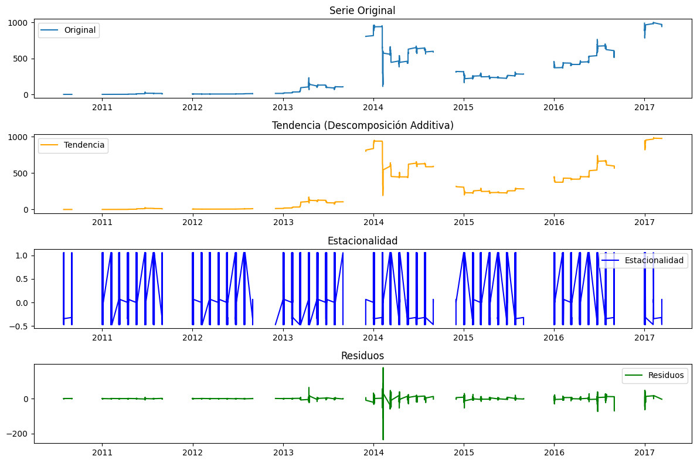
Antes del 2020, se puede observar que el precio es relativamente constante, a partir del 2020 es cuando presenta volatilidad en el precio. El patrón de los datos es repetitivo, lo cuál puede indicar que hay una componente ciclica en lso datos. y en los residuos se puede observar que hay variaciones las cuales no se explicna por la tendencia, ni por la estacionalidad
from statsmodels.stats.diagnostic import acorr_ljungbox
ljung_box_result = acorr_ljungbox(bitcoin_data['Residuos'].dropna(), lags=[10], return_df=True)
print("Prueba de Ljung-Box para los residuos (Medias Móviles):")
print(ljung_box_result)
ljung_box_result_decompose = acorr_ljungbox(residuos.dropna(), lags=[10], return_df=True)
print("\nPrueba de Ljung-Box para los residuos (`seasonal_decompose`):")
print(ljung_box_result_decompose)
Prueba de Ljung-Box para los residuos (Medias Móviles):
lb_stat lb_pvalue
10 957.012658 3.390933e-199
Prueba de Ljung-Box para los residuos (`seasonal_decompose`):
lb_stat lb_pvalue
10 1170.609546 3.145263e-245
Se puede observar que hay autocorrelación significativa en los residuos
Parte 2#
Repita el análisis anterior para las series de tiempo de: retorno acumulado diario y volatilidad, para diferentes ventanas. Para esto tenga en cuenta las siguientes definiciones e implemente ma nualmente las funciones que definen cada serie de tiempo
#Calculo de retornos diarios
j = 0
at = []
for j in range(0, len(bitcoin_data['Price']) - 1):
aj = (bitcoin_data['Price'].iloc[j + 1] - bitcoin_data['Price'].iloc[j]) / (bitcoin_data['Price'].iloc[j])
at.append(aj)
at = np.nan_to_num(at)
# Agregar los retornos diarios al DataFrame (ten en cuenta que el primer valor será `None`)
bitcoin_data['Daily_Return'] = [None] + list(at)
# Verificar que los retornos diarios se calcularon correctamente
print(bitcoin_data[['Price', 'Daily_Return']].head(10))
Price Daily_Return
Date
2010-07-29 0.1 NaN
2010-07-29 0.1 0.0
2010-07-29 0.1 0.0
2010-07-29 0.1 0.0
2010-07-29 0.1 0.0
2010-07-29 0.1 0.0
2010-07-29 0.1 0.0
2010-07-30 0.1 0.0
2010-07-30 0.1 0.0
2010-07-30 0.1 0.0
# Retorno acumulado
def cum_return(at):
cum_ret = np.zeros(len(at))
for j in range(0, len(at)):
if j == 0:
cum_ret[j] = at[j]
else:
cum_ret[j] = at[j] + cum_ret[j - 1]
return cum_ret
ret_acum = cum_return(at)
retorno_acumulado = cum_return(at)
retorno_acumulado_series = pd.Series([None] + list(retorno_acumulado), index=bitcoin_data.index)
retorno_acumulado_series = retorno_acumulado_series.reindex(bitcoin_data.index)
bitcoin_data['Retorno_Acumulado'] = retorno_acumulado_series
print(bitcoin_data[['Daily_Return', 'Retorno_Acumulado']].head(10))
Daily_Return Retorno_Acumulado
Date
2010-07-29 NaN NaN
2010-07-29 0.0 0.0
2010-07-29 0.0 0.0
2010-07-29 0.0 0.0
2010-07-29 0.0 0.0
2010-07-29 0.0 0.0
2010-07-29 0.0 0.0
2010-07-30 0.0 0.0
2010-07-30 0.0 0.0
2010-07-30 0.0 0.0
#Volatilidad
def volatility(w, at):
vols = []
for t in range(0, len(at) - w + 1):
sqr = []
r_list = at[t:t + w]
miu = (1 / w) * (sum(r_list))
for r in r_list:
dif = r - miu
sqr.append(dif ** 2)
# Verificar si la varianza es negativa o NaN
var = (1 / (w - 1)) * sum(sqr)
if var < 0 or np.isnan(var) or np.isinf(var):
vol = np.nan
else:
vol = np.sqrt(max(var, 0))
vols.append(vol)
vols = pd.Series(vols)
return vols
# Calcular la volatilidad para ventanas de 7, 14, 21 y 28 días
ventanas = [7, 14, 21, 28]
for w in ventanas:
vol = volatility(w, at)
if len(vol) < len(bitcoin_data):
bitcoin_data[f'Volatilidad_{w}d'] = [None] * (w - 1) + list(vol) + [None] * (len(bitcoin_data) - len(vol) - (w - 1))
else:
bitcoin_data[f'Volatilidad_{w}d'] = [None] * (w - 1) + list(vol)
print(bitcoin_data[['Daily_Return', 'Volatilidad_7d', 'Volatilidad_14d', 'Volatilidad_21d', 'Volatilidad_28d']].head(15))
#w=7, 14, 21, 28
Daily_Return Volatilidad_7d Volatilidad_14d Volatilidad_21d \
Date
2010-07-29 NaN NaN NaN NaN
2010-07-29 0.0 NaN NaN NaN
2010-07-29 0.0 NaN NaN NaN
2010-07-29 0.0 NaN NaN NaN
2010-07-29 0.0 NaN NaN NaN
2010-07-29 0.0 NaN NaN NaN
2010-07-29 0.0 0.0 NaN NaN
2010-07-30 0.0 0.0 NaN NaN
2010-07-30 0.0 0.0 NaN NaN
2010-07-30 0.0 0.0 NaN NaN
2010-07-30 0.0 0.0 NaN NaN
2010-07-30 0.0 0.0 NaN NaN
2010-07-30 0.0 0.0 NaN NaN
2010-08-30 0.0 0.0 0.0 NaN
2010-08-31 0.0 0.0 0.0 NaN
Volatilidad_28d
Date
2010-07-29 NaN
2010-07-29 NaN
2010-07-29 NaN
2010-07-29 NaN
2010-07-29 NaN
2010-07-29 NaN
2010-07-29 NaN
2010-07-30 NaN
2010-07-30 NaN
2010-07-30 NaN
2010-07-30 NaN
2010-07-30 NaN
2010-07-30 NaN
2010-08-30 NaN
2010-08-31 NaN
Item 2.#
Identifique si existen datos faltantes y realice su imputación usando alguna de las técnicas básicas estudiadas durante el curso.
hay_faltantes = bitcoin_data.isnull().values.any()
print(f"¿Hay valores faltantes? {hay_faltantes}")
¿Hay valores faltantes? True
filas_faltantes = bitcoin_data[bitcoin_data[['Retorno_Acumulado', 'Volatilidad_7d', 'Volatilidad_14d', 'Volatilidad_21d', 'Volatilidad_28d']].isna().any(axis=1)]
print(filas_faltantes)
Price Open High Low Vol. Change % Year Month Week \
Date
2010-07-29 0.1 0.1 0.1 0.1 570.0 0.00% 2010 7 29
2010-07-29 0.1 0.1 0.1 0.1 260.0 0.00% 2010 7 29
2010-07-29 0.1 0.1 0.1 0.1 580.0 0.00% 2010 7 29
2010-07-29 0.1 0.1 0.1 0.1 2160.0 0.00% 2010 7 29
2010-07-29 0.1 0.1 0.1 0.1 2400.0 0.00% 2010 7 29
2010-07-29 0.1 0.1 0.1 0.1 500.0 0.00% 2010 7 29
2010-07-29 0.1 0.1 0.1 0.1 1550.0 0.00% 2010 7 29
2010-07-30 0.1 0.1 0.1 0.1 880.0 0.00% 2010 7 30
2010-07-30 0.1 0.1 0.1 0.1 3370.0 0.00% 2010 7 30
2010-07-30 0.1 0.1 0.1 0.1 4390.0 0.00% 2010 7 30
2010-07-30 0.1 0.1 0.1 0.1 8060.0 0.00% 2010 7 30
2010-07-30 0.1 0.1 0.1 0.1 3020.0 0.00% 2010 7 30
2010-07-30 0.1 0.1 0.1 0.1 4020.0 0.00% 2010 7 30
2010-08-30 0.1 0.1 0.1 0.1 2600.0 0.00% 2010 8 30
2010-08-31 0.1 0.1 0.1 0.1 3600.0 0.00% 2010 8 31
2010-08-31 0.1 0.1 0.1 0.1 9820.0 0.00% 2010 8 31
2010-08-31 0.1 0.1 0.1 0.1 3490.0 0.00% 2010 8 31
2010-08-31 0.1 0.1 0.1 0.1 5030.0 0.00% 2010 8 31
2010-08-31 0.1 0.1 0.1 0.1 1400.0 0.00% 2010 8 31
2010-08-31 0.1 0.1 0.1 0.1 2620.0 0.00% 2010 8 31
2010-08-31 0.1 0.1 0.1 0.1 2200.0 0.00% 2010 8 31
NaT 0.1 0.1 0.1 0.1 13630.0 0.00% 2010 8 32
NaT 0.1 0.1 0.1 0.1 1310.0 0.00% 2010 8 32
NaT 0.1 0.1 0.1 0.1 14060.0 0.00% 2010 8 32
NaT 0.1 0.1 0.1 0.1 2060.0 0.00% 2010 8 32
NaT 0.1 0.1 0.1 0.1 3590.0 0.00% 2010 8 32
NaT 0.1 0.1 0.1 0.1 4400.0 0.00% 2010 8 32
2017-03-12 969.4 966.3 1,004.3 946.7 85330.0 0.32% 2017 3 12
Price_diff M2 M_2_t_t1 M_4 M_4_t_t1 M_3 \
Date
2010-07-29 0.0 NaN 0.1 0.0 0.0 0.000000
2010-07-29 0.0 0.10 0.1 0.0 0.0 0.000000
2010-07-29 0.0 0.10 0.1 0.0 0.0 0.100000
2010-07-29 0.0 0.10 0.1 0.1 0.1 0.100000
2010-07-29 0.0 0.10 0.1 0.1 0.1 0.100000
2010-07-29 0.0 0.10 0.1 0.1 0.1 0.100000
2010-07-29 0.0 0.10 0.1 0.1 0.1 0.100000
2010-07-30 0.0 0.10 0.1 0.1 0.1 0.100000
2010-07-30 0.0 0.10 0.1 0.1 0.1 0.100000
2010-07-30 0.0 0.10 0.1 0.1 0.1 0.100000
2010-07-30 0.0 0.10 0.1 0.1 0.1 0.100000
2010-07-30 0.0 0.10 0.1 0.1 0.1 0.100000
2010-07-30 0.0 0.10 0.1 0.1 0.1 0.100000
2010-08-30 0.0 0.10 0.1 0.1 0.1 0.100000
2010-08-31 0.0 0.10 0.1 0.1 0.1 0.100000
2010-08-31 0.0 0.10 0.1 0.1 0.1 0.100000
2010-08-31 0.0 0.10 0.1 0.1 0.1 0.100000
2010-08-31 0.0 0.10 0.1 0.1 0.1 0.100000
2010-08-31 0.0 0.10 0.1 0.1 0.1 0.100000
2010-08-31 0.0 0.10 0.1 0.1 0.1 0.100000
2010-08-31 0.0 0.10 0.1 0.1 0.1 0.100000
NaT 0.0 0.10 0.1 0.1 0.1 0.100000
NaT 0.0 0.10 0.1 0.1 0.1 0.100000
NaT 0.0 0.10 0.1 0.1 0.1 0.100000
NaT 0.0 0.10 0.1 0.1 0.1 0.100000
NaT 0.0 0.10 0.1 0.1 0.1 0.100000
NaT 0.0 0.10 0.1 0.1 0.1 0.100000
2017-03-12 3.1 967.85 NaN 961.7 0.0 958.466667
M_3_t-1_t+1 Detrended_M2 Detrended_M3 Detrended_M4 \
Date
2010-07-29 0.0 NaN 0.100000 0.1
2010-07-29 0.0 0.00 0.100000 0.1
2010-07-29 0.1 0.00 0.000000 0.1
2010-07-29 0.1 0.00 0.000000 0.0
2010-07-29 0.1 0.00 0.000000 0.0
2010-07-29 0.1 0.00 0.000000 0.0
2010-07-29 0.1 0.00 0.000000 0.0
2010-07-30 0.1 0.00 0.000000 0.0
2010-07-30 0.1 0.00 0.000000 0.0
2010-07-30 0.1 0.00 0.000000 0.0
2010-07-30 0.1 0.00 0.000000 0.0
2010-07-30 0.1 0.00 0.000000 0.0
2010-07-30 0.1 0.00 0.000000 0.0
2010-08-30 0.1 0.00 0.000000 0.0
2010-08-31 0.1 0.00 0.000000 0.0
2010-08-31 0.1 0.00 0.000000 0.0
2010-08-31 0.1 0.00 0.000000 0.0
2010-08-31 0.1 0.00 0.000000 0.0
2010-08-31 0.1 0.00 0.000000 0.0
2010-08-31 0.1 0.00 0.000000 0.0
2010-08-31 0.1 0.00 0.000000 0.0
NaT 0.1 0.00 0.000000 0.0
NaT 0.1 0.00 0.000000 0.0
NaT 0.1 0.00 0.000000 0.0
NaT 0.1 0.00 0.000000 0.0
NaT 0.1 0.00 0.000000 0.0
NaT 0.1 0.00 0.000000 0.0
2017-03-12 939.7 1.55 10.933333 7.7
Detrended_M2_special Detrended_M3_special Detrended_M4_special \
Date
2010-07-29 0.0 0.1 0.1
2010-07-29 0.0 0.1 0.1
2010-07-29 0.0 0.0 0.1
2010-07-29 0.0 0.0 0.0
2010-07-29 0.0 0.0 0.0
2010-07-29 0.0 0.0 0.0
2010-07-29 0.0 0.0 0.0
2010-07-30 0.0 0.0 0.0
2010-07-30 0.0 0.0 0.0
2010-07-30 0.0 0.0 0.0
2010-07-30 0.0 0.0 0.0
2010-07-30 0.0 0.0 0.0
2010-07-30 0.0 0.0 0.0
2010-08-30 0.0 0.0 0.0
2010-08-31 0.0 0.0 0.0
2010-08-31 0.0 0.0 0.0
2010-08-31 0.0 0.0 0.0
2010-08-31 0.0 0.0 0.0
2010-08-31 0.0 0.0 0.0
2010-08-31 0.0 0.0 0.0
2010-08-31 0.0 0.0 0.0
NaT 0.0 0.0 0.0
NaT 0.0 0.0 0.0
NaT 0.0 0.0 0.0
NaT 0.0 0.0 0.0
NaT 0.0 0.0 0.0
NaT 0.0 0.0 0.0
2017-03-12 NaN 29.7 969.4
Tendencia Residuos Daily_Return Retorno_Acumulado \
Date
2010-07-29 NaN NaN NaN NaN
2010-07-29 NaN NaN 0.000000 0.000000
2010-07-29 NaN NaN 0.000000 0.000000
2010-07-29 0.1 0.0 0.000000 0.000000
2010-07-29 0.1 0.0 0.000000 0.000000
2010-07-29 0.1 0.0 0.000000 0.000000
2010-07-29 0.1 0.0 0.000000 0.000000
2010-07-30 0.1 0.0 0.000000 0.000000
2010-07-30 0.1 0.0 0.000000 0.000000
2010-07-30 0.1 0.0 0.000000 0.000000
2010-07-30 0.1 0.0 0.000000 0.000000
2010-07-30 0.1 0.0 0.000000 0.000000
2010-07-30 0.1 0.0 0.000000 0.000000
2010-08-30 0.1 0.0 0.000000 0.000000
2010-08-31 0.1 0.0 0.000000 0.000000
2010-08-31 0.1 0.0 0.000000 0.000000
2010-08-31 0.1 0.0 0.000000 0.000000
2010-08-31 0.1 0.0 0.000000 0.000000
2010-08-31 0.1 0.0 0.000000 0.000000
2010-08-31 0.1 0.0 0.000000 0.000000
2010-08-31 0.1 0.0 0.000000 0.000000
NaT 0.1 0.0 0.000000 0.000000
NaT 0.1 0.0 0.000000 0.000000
NaT 0.1 0.0 0.000000 0.000000
NaT 0.1 0.0 0.000000 0.000000
NaT 0.1 0.0 0.000000 0.000000
NaT 0.1 0.0 0.000000 0.000000
2017-03-12 NaN NaN 0.003208 17.390429
Volatilidad_7d Volatilidad_14d Volatilidad_21d Volatilidad_28d
Date
2010-07-29 NaN NaN NaN NaN
2010-07-29 NaN NaN NaN NaN
2010-07-29 NaN NaN NaN NaN
2010-07-29 NaN NaN NaN NaN
2010-07-29 NaN NaN NaN NaN
2010-07-29 NaN NaN NaN NaN
2010-07-29 0.0 NaN NaN NaN
2010-07-30 0.0 NaN NaN NaN
2010-07-30 0.0 NaN NaN NaN
2010-07-30 0.0 NaN NaN NaN
2010-07-30 0.0 NaN NaN NaN
2010-07-30 0.0 NaN NaN NaN
2010-07-30 0.0 NaN NaN NaN
2010-08-30 0.0 0.0 NaN NaN
2010-08-31 0.0 0.0 NaN NaN
2010-08-31 0.0 0.0 NaN NaN
2010-08-31 0.0 0.0 NaN NaN
2010-08-31 0.0 0.0 NaN NaN
2010-08-31 0.0 0.0 NaN NaN
2010-08-31 0.0 0.0 NaN NaN
2010-08-31 0.0 0.0 0.0 NaN
NaT 0.0 0.0 0.0 NaN
NaT 0.0 0.0 0.0 NaN
NaT 0.0 0.0 0.0 NaN
NaT 0.0 0.0 0.0 NaN
NaT 0.0 0.0 0.0 NaN
NaT 0.0 0.0 0.0 NaN
2017-03-12 NaN NaN NaN NaN
filas_faltantes = bitcoin_data[['Retorno_Acumulado', 'Volatilidad_7d', 'Volatilidad_14d', 'Volatilidad_21d', 'Volatilidad_28d']].isna().sum()
print(filas_faltantes)
Retorno_Acumulado 1
Volatilidad_7d 7
Volatilidad_14d 14
Volatilidad_21d 21
Volatilidad_28d 28
dtype: int64
Hay 1 dato faltante del retorno acumulado, 7 de la volatilidad con w=7,14 de la volatilidad con w=14,21 de la volatilidad con w=21,28 de la volatilidad con w=28
pd.set_option('display.max_columns', None)
print(filas_faltantes)
Retorno_Acumulado 1
Volatilidad_7d 7
Volatilidad_14d 14
Volatilidad_21d 21
Volatilidad_28d 28
dtype: int64
print(bitcoin_data)
Price Open High Low Vol. Change % Year Month \
Date
2010-07-29 0.1 0.1 0.1 0.1 570.0 0.00% 2010 7
2010-07-29 0.1 0.1 0.1 0.1 260.0 0.00% 2010 7
2010-07-29 0.1 0.1 0.1 0.1 580.0 0.00% 2010 7
2010-07-29 0.1 0.1 0.1 0.1 2160.0 0.00% 2010 7
2010-07-29 0.1 0.1 0.1 0.1 2400.0 0.00% 2010 7
... ... ... ... ... ... ... ... ...
2017-02-07 995.4 996.5 1,007.6 975.1 32910.0 -0.12% 2017 2
2017-03-11 971.4 1,071.7 1,103.6 940.2 210420.0 -9.36% 2017 3
2017-03-12 939.7 1,035.0 1,038.4 927.3 132600.0 -9.21% 2017 3
2017-03-12 966.3 939.7 996.0 890.4 127050.0 2.83% 2017 3
2017-03-12 969.4 966.3 1,004.3 946.7 85330.0 0.32% 2017 3
Week Price_diff M2 M_2_t_t1 M_4 M_4_t_t1 M_3 \
Date
2010-07-29 29 0.0 NaN 0.10 0.000 0.0000 0.000000
2010-07-29 29 0.0 0.10 0.10 0.000 0.0000 0.000000
2010-07-29 29 0.0 0.10 0.10 0.000 0.0000 0.100000
2010-07-29 29 0.0 0.10 0.10 0.100 0.1000 0.100000
2010-07-29 29 0.0 0.10 0.10 0.100 0.1000 0.100000
... ... ... ... ... ... ... ...
2017-02-07 7 -1.1 995.95 983.40 992.125 976.9125 996.500000
2017-03-11 11 -24.0 983.40 955.55 990.225 0.0000 987.766667
2017-03-12 12 -31.7 955.55 953.00 975.750 0.0000 968.833333
2017-03-12 12 26.6 953.00 967.85 968.200 0.0000 959.133333
2017-03-12 12 3.1 967.85 NaN 961.700 0.0000 958.466667
M_3_t-1_t+1 Detrended_M2 Detrended_M3 Detrended_M4 \
Date
2010-07-29 0.0 NaN 0.100000 0.100
2010-07-29 0.0 0.00 0.100000 0.100
2010-07-29 0.1 0.00 0.000000 0.100
2010-07-29 0.1 0.00 0.000000 0.000
2010-07-29 0.1 0.00 0.000000 0.000
... ... ... ... ...
2017-02-07 997.6 -0.55 -1.100000 3.275
2017-03-11 996.5 -12.00 -16.366667 -18.825
2017-03-12 995.4 -15.85 -29.133333 -36.050
2017-03-12 971.4 13.30 7.166667 -1.900
2017-03-12 939.7 1.55 10.933333 7.700
Detrended_M2_special Detrended_M3_special Detrended_M4_special \
Date
2010-07-29 0.00 0.1 0.1000
2010-07-29 0.00 0.1 0.1000
2010-07-29 0.00 0.0 0.1000
2010-07-29 0.00 0.0 0.0000
2010-07-29 0.00 0.0 0.0000
... ... ... ...
2017-02-07 12.00 -2.2 18.4875
2017-03-11 15.85 -25.1 971.4000
2017-03-12 -13.30 -55.7 939.7000
2017-03-12 -1.55 -5.1 966.3000
2017-03-12 NaN 29.7 969.4000
Tendencia Residuos Daily_Return Retorno_Acumulado \
Date
2010-07-29 NaN NaN NaN NaN
2010-07-29 NaN NaN 0.000000 0.000000
2010-07-29 NaN NaN 0.000000 0.000000
2010-07-29 0.100000 0.000000 0.000000 0.000000
2010-07-29 0.100000 0.000000 0.000000 0.000000
... ... ... ... ...
2017-02-07 979.933333 15.466667 -0.001104 17.415658
2017-03-11 977.816667 -6.416667 -0.024111 17.391547
2017-03-12 973.116667 -33.416667 -0.032633 17.358914
2017-03-12 NaN NaN 0.028307 17.387221
2017-03-12 NaN NaN 0.003208 17.390429
Volatilidad_7d Volatilidad_14d Volatilidad_21d Volatilidad_28d
Date
2010-07-29 NaN NaN NaN NaN
2010-07-29 NaN NaN NaN NaN
2010-07-29 NaN NaN NaN NaN
2010-07-29 NaN NaN NaN NaN
2010-07-29 NaN NaN NaN NaN
... ... ... ... ...
2017-02-07 0.023067 0.019514 0.026517 0.035406
2017-03-11 0.019288 0.019868 0.020862 0.036049
2017-03-12 0.021565 0.020884 0.020152 0.025106
2017-03-12 0.021645 0.020236 0.019540 0.024681
2017-03-12 NaN NaN NaN NaN
[2381 rows x 30 columns]
from IPython.display import display
display(filas_faltantes)
Retorno_Acumulado 1
Volatilidad_7d 7
Volatilidad_14d 14
Volatilidad_21d 21
Volatilidad_28d 28
dtype: int64
print(bitcoin_data.index.duplicated().sum())
2141
No hay datos duplicados
bitcoin_data.columns = bitcoin_data.columns.str.strip()
bitcoin_data.reset_index(inplace=True)
import matplotlib.pyplot as plt
plt.figure(figsize=(12, 6))
plt.plot(bitcoin_data['Date'], bitcoin_data['Retorno_Acumulado'], label='Retorno acumulado', linestyle='-', marker='o', alpha=0.6)
plt.plot(bitcoin_data['Date'], bitcoin_data['Volatilidad_7d'], label='Volatilidad 7d', linestyle='-', marker='x', alpha=0.6)
plt.plot(bitcoin_data['Date'], bitcoin_data['Volatilidad_14d'], label='Volatilidad 14d', linestyle='-', marker='s', alpha=0.6)
plt.plot(bitcoin_data['Date'], bitcoin_data['Volatilidad_21d'], label='Volatilidad 21d', linestyle='-', marker='^', alpha=0.6)
plt.plot(bitcoin_data['Date'], bitcoin_data['Volatilidad_28d'], label='Volatilidad 28d', linestyle='-', marker='d', alpha=0.6)
plt.xlabel('Fecha')
plt.ylabel('Métrica')
plt.title('Retorno diario y volatilidad')
plt.grid(True)
plt.legend()
plt.xticks(rotation=45)
plt.tight_layout()
plt.show()
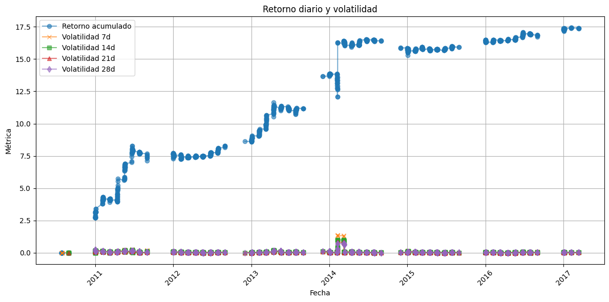
El retorno acumualdo tiene un aumento de manera progresiva La volatilidad en la mayoria del tiempo tiende a cero
bitcoin_data[['Retorno_Acumulado', 'Volatilidad_7d', 'Volatilidad_14d', 'Volatilidad_21d', 'Volatilidad_28d']] = bitcoin_data[['Retorno_Acumulado', 'Volatilidad_7d', 'Volatilidad_14d', 'Volatilidad_21d', 'Volatilidad_28d']].fillna(method='bfill')
C:\Users\FBA\AppData\Local\Temp\ipykernel_27688\2375788008.py:1: FutureWarning:
DataFrame.fillna with 'method' is deprecated and will raise in a future version. Use obj.ffill() or obj.bfill() instead.
Para realizar la inputación de datos faltantes se utilizo el método Backfill debido a que en el caso del bitcoin, en especial al inicio de la serie donde se ubican faltantes presenta una estabilidad inicial, ya que el Bitcoin cuando empezó tenian un comportamiento estable
datos_faltantes = bitcoin_data[['Retorno_Acumulado', 'Volatilidad_7d', 'Volatilidad_14d', 'Volatilidad_21d', 'Volatilidad_28d']].isna().sum()
print(datos_faltantes)
Retorno_Acumulado 0
Volatilidad_7d 1
Volatilidad_14d 1
Volatilidad_21d 1
Volatilidad_28d 1
dtype: int64
Despues de realizar el método de input “Backfill”, no se presentan datos faltantes
import matplotlib.pyplot as plt
plt.figure(figsize=(12, 6))
plt.plot(bitcoin_data['Date'], bitcoin_data['Retorno_Acumulado'], label='Retorno acumulado', linestyle='-', marker='o', alpha=0.6)
plt.plot(bitcoin_data['Date'], bitcoin_data['Volatilidad_7d'], label='Volatilidad 7d', linestyle='-', marker='x', alpha=0.6)
plt.plot(bitcoin_data['Date'], bitcoin_data['Volatilidad_14d'], label='Volatilidad 14d', linestyle='-', marker='s', alpha=0.6)
plt.plot(bitcoin_data['Date'], bitcoin_data['Volatilidad_21d'], label='Volatilidad 21d', linestyle='-', marker='^', alpha=0.6)
plt.plot(bitcoin_data['Date'], bitcoin_data['Volatilidad_28d'], label='Volatilidad 28d', linestyle='-', marker='d', alpha=0.6)
plt.xlabel('Fecha')
plt.ylabel('Métrica')
plt.title('Retorno diario y volatilidad sin datos faltantes')
plt.grid(True)
plt.legend()
plt.xticks(rotation=45)
plt.tight_layout()
plt.show()
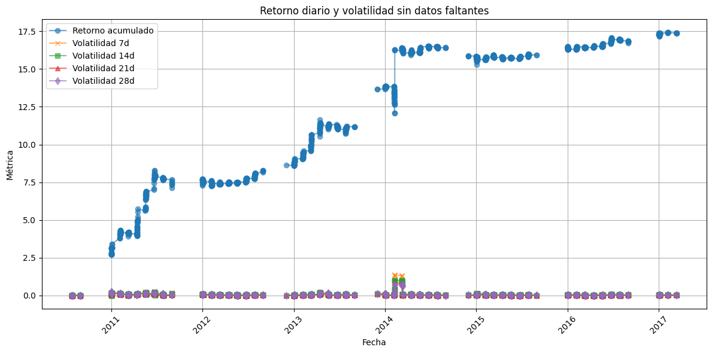
Se puede observra que el retorno acumualdo tiene un comportamiento ascendente, con peridoos de estabilidad hasta 2011, después de esto se obsrvan incrementos significativos En la volatilidad se puede observar que al princpio tiende a ser baja durante gran parte del tiempo y presenta algunos picos, los cuáles pueden ser dados por eventos ocurridos en el mercado.
Item 3.#
Realice también un histograma con Plotly para representar el volumen tradeado diariamente (Volume)
import matplotlib.pyplot as plt
# Asegúrate de reemplazar 'bitcoin_data' por el nombre de tu DataFrame
plt.figure(figsize=(10, 6))
plt.hist(bitcoin_data['Retorno_Acumulado'], bins=30, color='skyblue', edgecolor='black')
plt.title('Histograma del Retorno Acumulado')
plt.xlabel('Retorno Acumulado')
plt.ylabel('Frecuencia')
plt.grid(True)
plt.show()
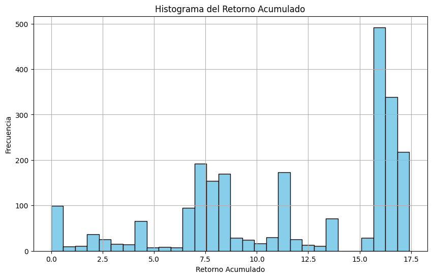
En el histograma del retorno acumulado se puede observar, que la mayoría de los datos acumulados están en el extremo derecho y pocos valores se encunetran distribuidos en la parte izquierda, es decir que el Bitcoin muestra que la mayor parte del tiempo del retorno fue positivo.
import matplotlib.pyplot as plt
# Configuración del tamaño de la figura
fig, axs = plt.subplots(2, 2, figsize=(12, 8))
# Histograma de volatilidad para 7 días
axs[0, 0].hist(bitcoin_data['Volatilidad_7d'], bins=30, color='skyblue', edgecolor='black')
axs[0, 0].set_title('Volatilidad 7d')
axs[0, 0].set_xlabel('Volatilidad')
axs[0, 0].set_ylabel('Frecuencia')
# Histograma de volatilidad para 14 días
axs[0, 1].hist(bitcoin_data['Volatilidad_14d'], bins=30, color='lightcoral', edgecolor='black')
axs[0, 1].set_title('Volatilidad 14d')
axs[0, 1].set_xlabel('Volatilidad')
axs[0, 1].set_ylabel('Frecuencia')
# Histograma de volatilidad para 21 días
axs[1, 0].hist(bitcoin_data['Volatilidad_21d'], bins=30, color='lightgreen', edgecolor='black')
axs[1, 0].set_title('Volatilidad 21d')
axs[1, 0].set_xlabel('Volatilidad')
axs[1, 0].set_ylabel('Frecuencia')
# Histograma de volatilidad para 28 días
axs[1, 1].hist(bitcoin_data['Volatilidad_28d'], bins=30, color='gold', edgecolor='black')
axs[1, 1].set_title('Volatilidad 28d')
axs[1, 1].set_xlabel('Volatilidad')
axs[1, 1].set_ylabel('Frecuencia')
# Título general y ajustes finales
fig.suptitle("Histogramas de Volatilidad para W=7,14,21,28")
plt.tight_layout(rect=[0, 0.03, 1, 0.95])
plt.show()
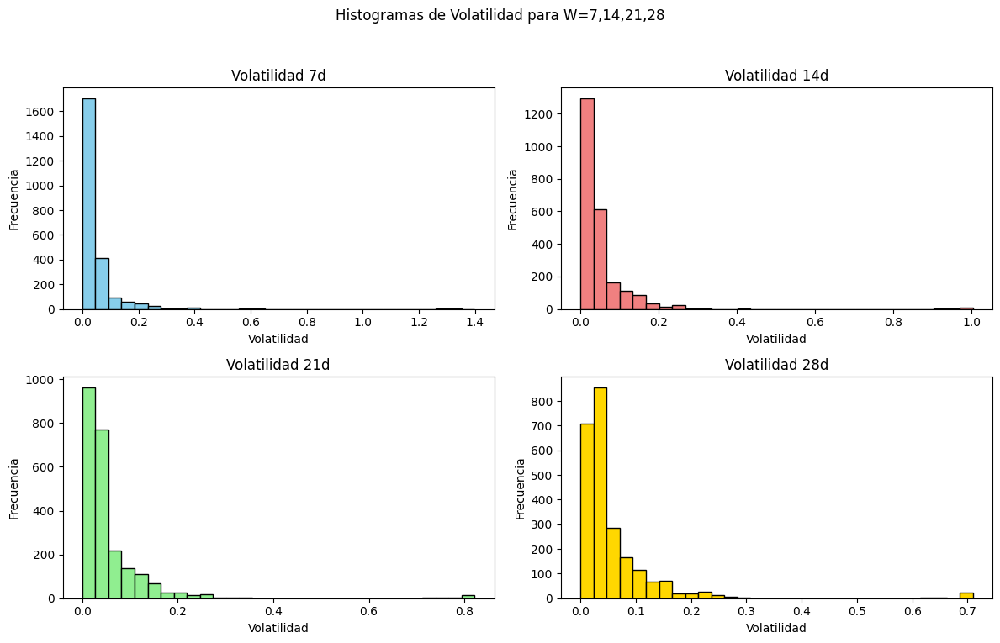
EN los histogramas presentados para la volatilidad en 7,14,21,28 la distribución es segada hacía la derecha y donde la mayoría de datos están concentardos cerca de 0. Además se puede observar que los rangos de volatilidd son pequeños, es decir que el mercado del bitcoin ha tenido peridos constantes donde la fluctuaciones fueron pequeñas. Además se observa que a medida que la ventana aumenta, la distribución se mantiene similar, es decir, que en las ventanas mas grandes/largas, es más probable ver fluctiaciones moderadas, que cuando se mira la volatilidad de los eventos pequeños.
Item 4.#
Realice graficos de subseries considerando agrupación por semana, mes y año. Utilice graficos de series de tiempo y boxplots para analizar estas subseries.
bitcoin_data.set_index('Date', inplace=True)
bitcoin_data.index = pd.to_datetime(bitcoin_data.index)
volatilidad_7_mes_mean = bitcoin_data['Volatilidad_7d'].resample('ME').mean()
volatilidad_14_mes_mean = bitcoin_data['Volatilidad_14d'].resample('ME').mean()
volatilidad_21_mes_mean = bitcoin_data['Volatilidad_21d'].resample('ME').mean()
volatilidad_28_mes_mean = bitcoin_data['Volatilidad_28d'].resample('ME').mean()
retorno_acumulado_mes_mean = bitcoin_data['Retorno_Acumulado'].resample('ME').mean()
volatilidad_7_sem_mean = bitcoin_data['Volatilidad_7d'].resample('W').mean()
volatilidad_14_sem_mean = bitcoin_data['Volatilidad_14d'].resample('W').mean()
volatilidad_21_sem_mean = bitcoin_data['Volatilidad_21d'].resample('W').mean()
volatilidad_28_sem_mean = bitcoin_data['Volatilidad_28d'].resample('W').mean()
retorno_acumulado_sem_mean = bitcoin_data['Retorno_Acumulado'].resample('W').mean()
volatilidad_7_año_mean = bitcoin_data['Volatilidad_7d'].resample('YE').mean()
volatilidad_14_año_mean = bitcoin_data['Volatilidad_14d'].resample('YE').mean()
volatilidad_21_año_mean = bitcoin_data['Volatilidad_21d'].resample('YE').mean()
volatilidad_28_año_mean = bitcoin_data['Volatilidad_28d'].resample('YE').mean()
retorno_acumulado_año_mean = bitcoin_data['Retorno_Acumulado'].resample('YE').mean()
import matplotlib.pyplot as plt
# Diccionario de series agrupadas
series_agrupadas = {
'Mensual': {
'Volatilidad 7d': volatilidad_7_mes_mean,
'Volatilidad 14d': volatilidad_14_mes_mean,
'Volatilidad 21d': volatilidad_21_mes_mean,
'Volatilidad 28d': volatilidad_28_mes_mean,
'Retorno Acumulado': retorno_acumulado_mes_mean
},
'Semanal': {
'Volatilidad 7d': volatilidad_7_sem_mean,
'Volatilidad 14d': volatilidad_14_sem_mean,
'Volatilidad 21d': volatilidad_21_sem_mean,
'Volatilidad 28d': volatilidad_28_sem_mean,
'Retorno Acumulado': retorno_acumulado_sem_mean
},
'Anual': {
'Volatilidad 7d': volatilidad_7_año_mean,
'Volatilidad 14d': volatilidad_14_año_mean,
'Volatilidad 21d': volatilidad_21_año_mean,
'Volatilidad 28d': volatilidad_28_año_mean,
'Retorno Acumulado': retorno_acumulado_año_mean
}
}
for agrupacion, series in series_agrupadas.items():
fig, ax1 = plt.subplots(figsize=(10, 6))
# Graficar series de volatilidad en el eje primario
for nombre_serie, datos in series.items():
if nombre_serie != 'Retorno Acumulado':
ax1.plot(datos.index, datos, label=nombre_serie)
ax1.set_title(f'Series de Tiempo Agrupadas {agrupacion}')
ax1.set_xlabel('Fecha')
ax1.set_ylabel('Volatilidad (mean)')
ax1.legend(loc='upper left')
ax1.grid(True)
# Graficar el Retorno Acumulado en el eje secundario
ax2 = ax1.twinx()
ax2.plot(series['Retorno Acumulado'].index, series['Retorno Acumulado'], label='Retorno Acumulado', color='purple')
ax2.set_ylabel('Retorno Acumulado (mean)')
ax2.legend(loc='upper right')
plt.show()
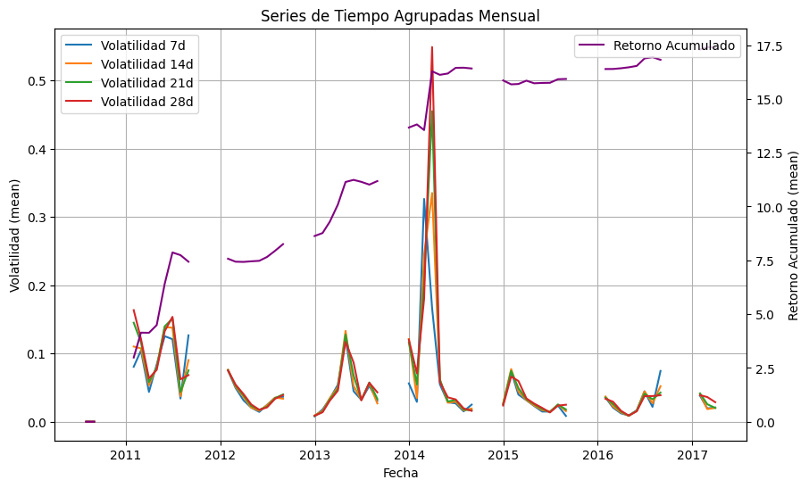
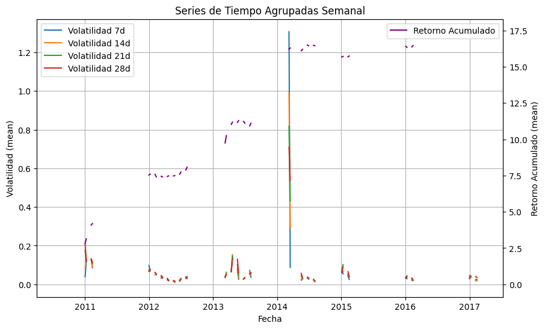
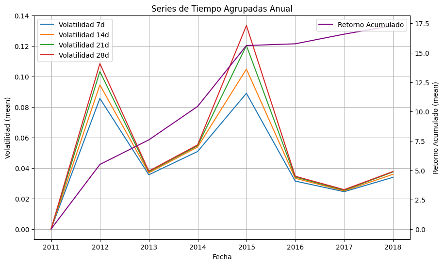
-Retorno acumulado y valatilidad mensual=En el retorno acumulado se puede observar un incremento de forma gradual desde el 2011, hasta el 2017, además presenta unos picos al rededor del 2013 hasta el 2016. En la voltidad se puede observar valores planos, por lo cuál se puede decir el la volatilidad del Bitcoin es estable
-Retorno acumulado y valatilidad semanal= el retorno acumulado semanal tiene un comportamiento similar al mensual, con la diferencia que la semanal tiene un poco más de detalle. En cambio la volatilidad se mantiene bajas durante la gran mayoría de periodos
-Retorno acumulado y valatilidad anual= en el retorno acumulado se muestra un crecimiento sostenido, donde tuvo su crecimeinto mas notable entre el 2012 y el 2014. Además se puede observar que la voaltilidad en las diferentes ventanas es plana, lo que queire decir es que esta se suaviza cuando se calculan los promedios mensuales.
Los gráficos mensual y semanal tienen una visión más al detalle, en cambio en el anual se ve logra observar la tendencia, pero sin tanto detalle
import numpy as np
import matplotlib.pyplot as plt
# Asegurarse de que no haya NaN o valores infinitos en cada lista
volatilidad_7_mes_mean = [x for x in volatilidad_7_mes_mean if not (np.isnan(x) or np.isinf(x))]
volatilidad_14_mes_mean = [x for x in volatilidad_14_mes_mean if not (np.isnan(x) or np.isinf(x))]
volatilidad_21_mes_mean = [x for x in volatilidad_21_mes_mean if not (np.isnan(x) or np.isinf(x))]
volatilidad_28_mes_mean = [x for x in volatilidad_28_mes_mean if not (np.isnan(x) or np.isinf(x))]
retorno_acumulado_mes_mean = [x for x in retorno_acumulado_mes_mean if not (np.isnan(x) or np.isinf(x))]
# Datos para volatilidades y nombres
volatilidades = [volatilidad_7_mes_mean, volatilidad_14_mes_mean, volatilidad_21_mes_mean, volatilidad_28_mes_mean]
nombres_volatilidades = ['Volatilidad 7d (Mensual)', 'Volatilidad 14d (Mensual)', 'Volatilidad 21d (Mensual)', 'Volatilidad 28d (Mensual)']
# Crear la figura y el primer eje
fig, ax1 = plt.subplots(figsize=(10, 6))
# Gráfico de cajas para las series de volatilidad en el eje primario
box1 = ax1.boxplot(volatilidades, positions=range(len(volatilidades)), patch_artist=True,
boxprops=dict(facecolor="skyblue", color="blue"))
ax1.set_xticks(range(len(nombres_volatilidades) + 1)) # +1 para incluir la posición del retorno acumulado
ax1.set_xticklabels(nombres_volatilidades + ['Retorno Acumulado (Mensual)'], rotation=45, ha='right')
ax1.set_ylabel('Volatilidad')
ax1.set_title('Box Plots de Volatilidad y Retorno Acumulado mensual')
ax1.grid(True)
# Crear un eje secundario para el Retorno Acumulado y graficarlo como un boxplot en una posición separada
ax2 = ax1.twinx()
box2 = ax2.boxplot([retorno_acumulado_mes_mean], positions=[len(volatilidades)], patch_artist=True,
boxprops=dict(facecolor="lightcoral", color="red"))
ax2.set_ylabel('Retorno Acumulado')
plt.tight_layout()
plt.show()
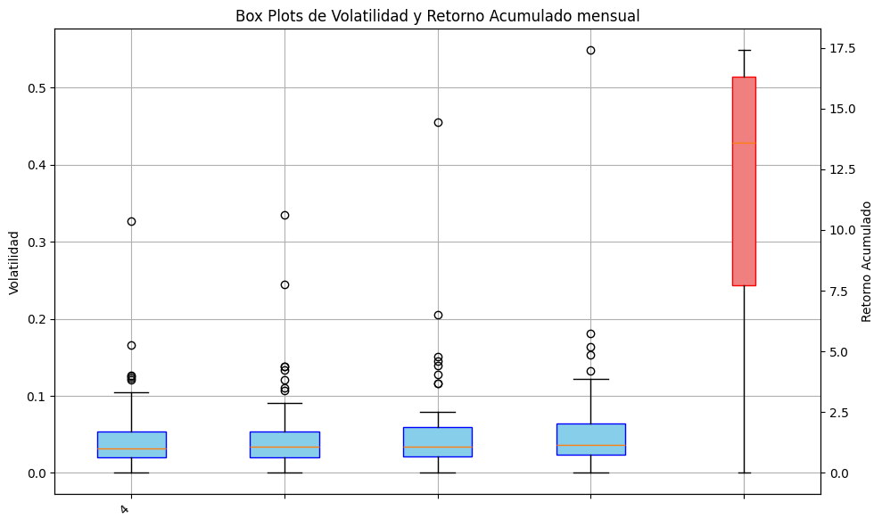
En la gráfica donde se cuentran los box plot, se puede observar que el de retorno acumulado se puede observar que hay una mediana, hay alta acumualción de datos entre el cuartil 1 y cuartil 3, además se observan outliers, que represnatn variaciones significatuvas.En los gráficos de volatilidad, esta es baja, en la ventana W=7, se observa que la volatilidad mensual es baja, además hay presencia de valores atípicos y estos son peridos donde hubo mayor volatilidad;En la venatana W=14 la volatilidad también es baja, además hay presencia de valores atípicos; en w=21 la volatilidad es baja, inclusive se podría decir que es aún más baja que las mencionadas anteriormente, además tambien se observa presencia de outlier; por último en W=28 tiene el mismo patrón que las volatilidades anteriormente mencionadas.
import numpy as np
import matplotlib.pyplot as plt
# Asegurarse de que no haya NaN o valores infinitos en cada lista
volatilidad_7_sem_mean = [x for x in volatilidad_7_sem_mean if not (np.isnan(x) or np.isinf(x))]
volatilidad_14_sem_mean = [x for x in volatilidad_14_sem_mean if not (np.isnan(x) or np.isinf(x))]
volatilidad_21_sem_mean = [x for x in volatilidad_21_sem_mean if not (np.isnan(x) or np.isinf(x))]
volatilidad_28_sem_mean = [x for x in volatilidad_28_sem_mean if not (np.isnan(x) or np.isinf(x))]
retorno_acumulado_mes_mean = [x for x in retorno_acumulado_mes_mean if not (np.isnan(x) or np.isinf(x))]
# Datos para volatilidades y nombres
volatilidades = [volatilidad_7_sem_mean, volatilidad_14_sem_mean, volatilidad_21_sem_mean, volatilidad_28_sem_mean]
nombres_volatilidades = ['Volatilidad w=7 semanal', 'Volatilidad w=14 semanal', 'Volatilidad w=21 semanal', 'Volatilidad w=28 semanal']
# Crear la figura
fig, ax1 = plt.subplots(figsize=(10, 6))
# Gráfico de violín para las series de volatilidad en el eje primario
violin1 = ax1.violinplot(volatilidades, showmeans=True, showmedians=True)
ax1.set_xticks(range(1, len(nombres_volatilidades) + 2)) # +2 para incluir espacio del eje secundario
ax1.set_xticklabels(nombres_volatilidades + ['Retorno Acumulado semanal'], rotation=45, ha='right')
ax1.set_ylabel('Volatilidad')
ax1.set_title('Distribución de Volatilidad y Retorno Acumulado semanal')
ax1.grid(True)
# Crear un eje secundario para el Retorno Acumulado y graficarlo como un violín en una posición separada
ax2 = ax1.twinx()
violin2 = ax2.violinplot([retorno_acumulado_mes_mean], positions=[len(volatilidades) + 1], showmeans=True, showmedians=True)
ax2.set_ylabel('Retorno Acumulado')
plt.tight_layout()
plt.show()
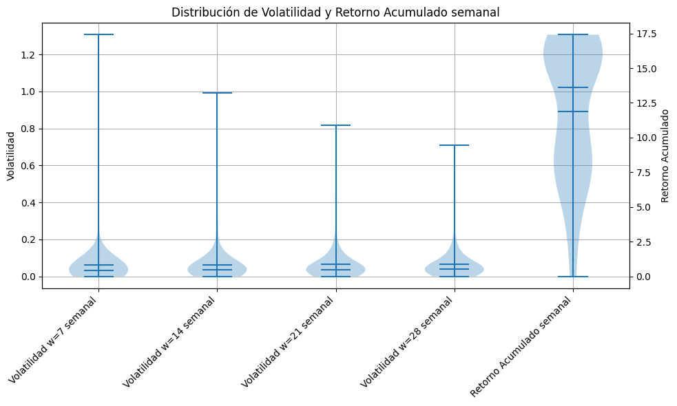
Los box plots de volatilidad muestran que la mediana de la volatilidad tiene media cero y baja variabilidad en la semana, presenta outliers esto es debido que hay semanas en las cuales se produce un aumento en el precio del Bitcoin, en cambio el box plot acumualdo semanal tiene una distribución amplia con presencia de outliers lo cuapl indica que hay semanas en las cuales se observa una alta variación en el retorno
import numpy as np
import matplotlib.pyplot as plt
# Asegurarse de que no haya NaN o valores infinitos en cada lista
volatilidad_7_año_mean = [x for x in volatilidad_7_año_mean if not (np.isnan(x) or np.isinf(x))]
volatilidad_14_año_mean = [x for x in volatilidad_14_año_mean if not (np.isnan(x) or np.isinf(x))]
volatilidad_21_año_mean = [x for x in volatilidad_21_año_mean if not (np.isnan(x) or np.isinf(x))]
volatilidad_28_año_mean = [x for x in volatilidad_28_año_mean if not (np.isnan(x) or np.isinf(x))]
retorno_acumulado_mes_mean = [x for x in retorno_acumulado_mes_mean if not (np.isnan(x) or np.isinf(x))]
# Datos para volatilidades y nombres
volatilidades = [volatilidad_7_año_mean, volatilidad_14_año_mean, volatilidad_21_año_mean, volatilidad_28_año_mean]
nombres_volatilidades = ['Volatilidad w=7 anual', 'Volatilidad w=14 anual', 'Volatilidad w=21 anual', 'Volatilidad w=28 anual']
# Crear la figura y el primer eje
fig, ax1 = plt.subplots(figsize=(10, 6))
# Gráfico de cajas para las series de volatilidad en el eje primario
box1 = ax1.boxplot(volatilidades, positions=range(len(volatilidades)), patch_artist=True,
boxprops=dict(facecolor="skyblue", color="blue"))
ax1.set_xticks(range(len(nombres_volatilidades) + 1)) # +1 para incluir la posición del retorno acumulado
ax1.set_xticklabels(nombres_volatilidades + ['Retorno Acumulado anual'], rotation=45, ha='right')
ax1.set_ylabel('Volatilidad')
ax1.set_title('Box Plots de Volatilidad y Retorno Acumulado anual')
ax1.grid(True)
# Crear un eje secundario para el Retorno Acumulado y graficarlo como un boxplot en una posición separada
ax2 = ax1.twinx()
box2 = ax2.boxplot([retorno_acumulado_mes_mean], positions=[len(volatilidades)], patch_artist=True,
boxprops=dict(facecolor="lightcoral", color="red"))
ax2.set_ylabel('Retorno Acumulado')
plt.tight_layout()
plt.show()
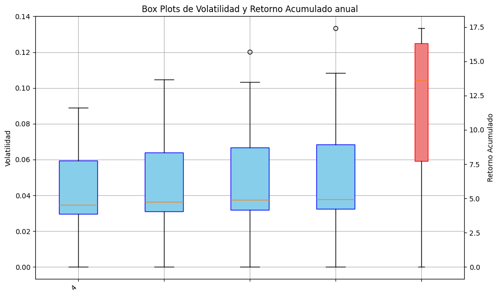
Los box plot de volatilidad presentan valores con mediana cercana a cero, con cajas estrechas y una baja presencia de outlier por lo tanto la volatilidad se mantiene contastante anual. En cambio en el box plot de retornos acumulados se muestra una mayor variabilidad, con la mediana posicionada en el rango inferior, es decir, en promedio el creciemiento no es significativo, además hay presencia de outliers en donde el bitcoin pudo haber tenido altos y bajos
import pandas as pd
volatilidad_7_semanal = bitcoin_data['Volatilidad_7d'].resample('W').mean().fillna(method='ffill')
volatilidad_14_semanal = bitcoin_data['Volatilidad_14d'].resample('W').mean().fillna(method='ffill')
volatilidad_21_semanal = bitcoin_data['Volatilidad_21d'].resample('W').mean().fillna(method='ffill')
volatilidad_28_semanal = bitcoin_data['Volatilidad_28d'].resample('W').mean().fillna(method='ffill')
retorno_acumulado_semanal = bitcoin_data['Retorno_Acumulado'].resample('W').mean().fillna(method='ffill')
volatilidad_7_mensual = bitcoin_data['Volatilidad_7d'].resample('M').mean().fillna(method='ffill')
volatilidad_14_mensual = bitcoin_data['Volatilidad_14d'].resample('M').mean().fillna(method='ffill')
volatilidad_21_mensual = bitcoin_data['Volatilidad_21d'].resample('M').mean().fillna(method='ffill')
volatilidad_28_mensual = bitcoin_data['Volatilidad_28d'].resample('M').mean().fillna(method='ffill')
retorno_acumulado_mensual = bitcoin_data['Retorno_Acumulado'].resample('M').mean().fillna(method='ffill')
volatilidad_7_anual = bitcoin_data['Volatilidad_7d'].resample('Y').mean().fillna(method='ffill')
volatilidad_14_anual = bitcoin_data['Volatilidad_14d'].resample('Y').mean().fillna(method='ffill')
volatilidad_21_anual = bitcoin_data['Volatilidad_21d'].resample('Y').mean().fillna(method='ffill')
volatilidad_28_anual = bitcoin_data['Volatilidad_28d'].resample('Y').mean().fillna(method='ffill')
retorno_acumulado_anual = bitcoin_data['Retorno_Acumulado'].resample('Y').mean().fillna(method='ffill')
C:\Users\FBA\AppData\Local\Temp\ipykernel_27688\3555333478.py:3: FutureWarning:
Series.fillna with 'method' is deprecated and will raise in a future version. Use obj.ffill() or obj.bfill() instead.
C:\Users\FBA\AppData\Local\Temp\ipykernel_27688\3555333478.py:4: FutureWarning:
Series.fillna with 'method' is deprecated and will raise in a future version. Use obj.ffill() or obj.bfill() instead.
C:\Users\FBA\AppData\Local\Temp\ipykernel_27688\3555333478.py:5: FutureWarning:
Series.fillna with 'method' is deprecated and will raise in a future version. Use obj.ffill() or obj.bfill() instead.
C:\Users\FBA\AppData\Local\Temp\ipykernel_27688\3555333478.py:6: FutureWarning:
Series.fillna with 'method' is deprecated and will raise in a future version. Use obj.ffill() or obj.bfill() instead.
C:\Users\FBA\AppData\Local\Temp\ipykernel_27688\3555333478.py:7: FutureWarning:
Series.fillna with 'method' is deprecated and will raise in a future version. Use obj.ffill() or obj.bfill() instead.
C:\Users\FBA\AppData\Local\Temp\ipykernel_27688\3555333478.py:9: FutureWarning:
'M' is deprecated and will be removed in a future version, please use 'ME' instead.
C:\Users\FBA\AppData\Local\Temp\ipykernel_27688\3555333478.py:9: FutureWarning:
Series.fillna with 'method' is deprecated and will raise in a future version. Use obj.ffill() or obj.bfill() instead.
C:\Users\FBA\AppData\Local\Temp\ipykernel_27688\3555333478.py:10: FutureWarning:
'M' is deprecated and will be removed in a future version, please use 'ME' instead.
C:\Users\FBA\AppData\Local\Temp\ipykernel_27688\3555333478.py:10: FutureWarning:
Series.fillna with 'method' is deprecated and will raise in a future version. Use obj.ffill() or obj.bfill() instead.
C:\Users\FBA\AppData\Local\Temp\ipykernel_27688\3555333478.py:11: FutureWarning:
'M' is deprecated and will be removed in a future version, please use 'ME' instead.
C:\Users\FBA\AppData\Local\Temp\ipykernel_27688\3555333478.py:11: FutureWarning:
Series.fillna with 'method' is deprecated and will raise in a future version. Use obj.ffill() or obj.bfill() instead.
C:\Users\FBA\AppData\Local\Temp\ipykernel_27688\3555333478.py:12: FutureWarning:
'M' is deprecated and will be removed in a future version, please use 'ME' instead.
C:\Users\FBA\AppData\Local\Temp\ipykernel_27688\3555333478.py:12: FutureWarning:
Series.fillna with 'method' is deprecated and will raise in a future version. Use obj.ffill() or obj.bfill() instead.
C:\Users\FBA\AppData\Local\Temp\ipykernel_27688\3555333478.py:13: FutureWarning:
'M' is deprecated and will be removed in a future version, please use 'ME' instead.
C:\Users\FBA\AppData\Local\Temp\ipykernel_27688\3555333478.py:13: FutureWarning:
Series.fillna with 'method' is deprecated and will raise in a future version. Use obj.ffill() or obj.bfill() instead.
C:\Users\FBA\AppData\Local\Temp\ipykernel_27688\3555333478.py:15: FutureWarning:
'Y' is deprecated and will be removed in a future version, please use 'YE' instead.
C:\Users\FBA\AppData\Local\Temp\ipykernel_27688\3555333478.py:15: FutureWarning:
Series.fillna with 'method' is deprecated and will raise in a future version. Use obj.ffill() or obj.bfill() instead.
C:\Users\FBA\AppData\Local\Temp\ipykernel_27688\3555333478.py:16: FutureWarning:
'Y' is deprecated and will be removed in a future version, please use 'YE' instead.
C:\Users\FBA\AppData\Local\Temp\ipykernel_27688\3555333478.py:16: FutureWarning:
Series.fillna with 'method' is deprecated and will raise in a future version. Use obj.ffill() or obj.bfill() instead.
C:\Users\FBA\AppData\Local\Temp\ipykernel_27688\3555333478.py:17: FutureWarning:
'Y' is deprecated and will be removed in a future version, please use 'YE' instead.
C:\Users\FBA\AppData\Local\Temp\ipykernel_27688\3555333478.py:17: FutureWarning:
Series.fillna with 'method' is deprecated and will raise in a future version. Use obj.ffill() or obj.bfill() instead.
C:\Users\FBA\AppData\Local\Temp\ipykernel_27688\3555333478.py:18: FutureWarning:
'Y' is deprecated and will be removed in a future version, please use 'YE' instead.
C:\Users\FBA\AppData\Local\Temp\ipykernel_27688\3555333478.py:18: FutureWarning:
Series.fillna with 'method' is deprecated and will raise in a future version. Use obj.ffill() or obj.bfill() instead.
C:\Users\FBA\AppData\Local\Temp\ipykernel_27688\3555333478.py:19: FutureWarning:
'Y' is deprecated and will be removed in a future version, please use 'YE' instead.
C:\Users\FBA\AppData\Local\Temp\ipykernel_27688\3555333478.py:19: FutureWarning:
Series.fillna with 'method' is deprecated and will raise in a future version. Use obj.ffill() or obj.bfill() instead.
import pandas as pd
import statsmodels.api as sm
import matplotlib.pyplot as plt
def descomponer_y_graficar(serie, nombre):
result = sm.tsa.seasonal_decompose(serie, model='additive') # o 'multiplicative'
plt.figure(figsize=(15, 10))
plt.subplot(3, 1, 1)
plt.plot(result.observed, label='Serie Observada')
plt.title(f'Serie Observada - {nombre}')
plt.legend()
plt.subplot(3, 1, 2)
plt.plot(result.trend, label='Tendencia', color='orange')
plt.title('Tendencia')
plt.legend()
plt.subplot(3, 1, 3)
plt.plot(result.seasonal, label='Estacionalidad', color='green')
plt.title('Estacionalidad')
plt.legend()
plt.tight_layout()
plt.show()
return result
resultados_semanales = {
'Volatilidad 7d': descomponer_y_graficar(volatilidad_7_semanal, 'Volatilidad 7d'),
'Volatilidad 14d': descomponer_y_graficar(volatilidad_14_semanal, 'Volatilidad 14d'),
'Volatilidad 21d': descomponer_y_graficar(volatilidad_21_semanal, 'Volatilidad 21d'),
'Volatilidad 28d': descomponer_y_graficar(volatilidad_28_semanal, 'Volatilidad 28d'),
'Retorno Acumulado': descomponer_y_graficar(retorno_acumulado_semanal, 'Retorno Acumulado')
}
resultados_mensuales = {
'Volatilidad 7d': descomponer_y_graficar(volatilidad_7_mensual, 'Volatilidad 7d'),
'Volatilidad 14d': descomponer_y_graficar(volatilidad_14_mensual, 'Volatilidad 14d'),
'Volatilidad 21d': descomponer_y_graficar(volatilidad_21_mensual, 'Volatilidad 21d'),
'Volatilidad 28d': descomponer_y_graficar(volatilidad_28_mensual, 'Volatilidad 28d'),
'Retorno Acumulado': descomponer_y_graficar(retorno_acumulado_mensual, 'Retorno Acumulado')
}
resultados_anuales = {
'Volatilidad 7d': descomponer_y_graficar(volatilidad_7_anual, 'Volatilidad 7d'),
'Volatilidad 14d': descomponer_y_graficar(volatilidad_14_anual, 'Volatilidad 14d'),
'Volatilidad 21d': descomponer_y_graficar(volatilidad_21_anual, 'Volatilidad 21d'),
'Volatilidad 28d': descomponer_y_graficar(volatilidad_28_anual, 'Volatilidad 28d'),
'Retorno Acumulado': descomponer_y_graficar(retorno_acumulado_anual, 'Retorno Acumulado')
}
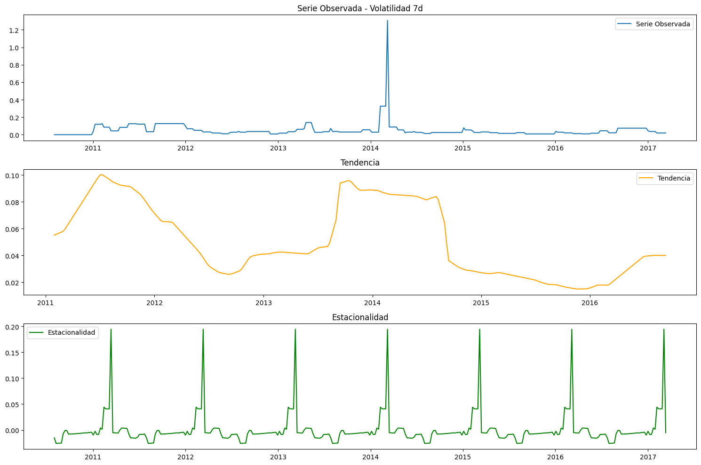
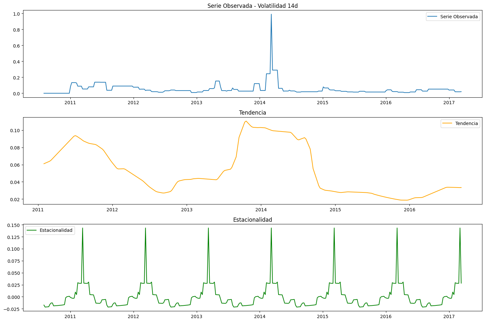
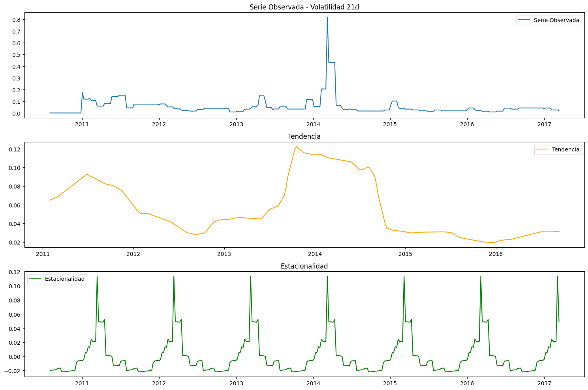
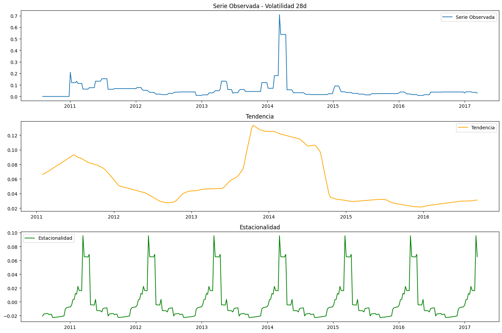
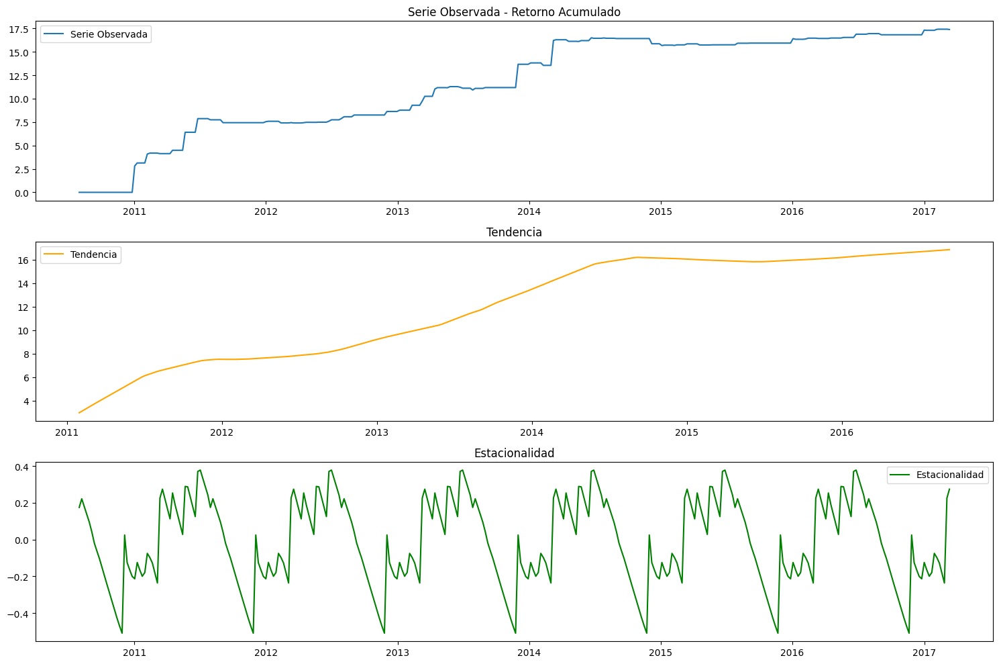
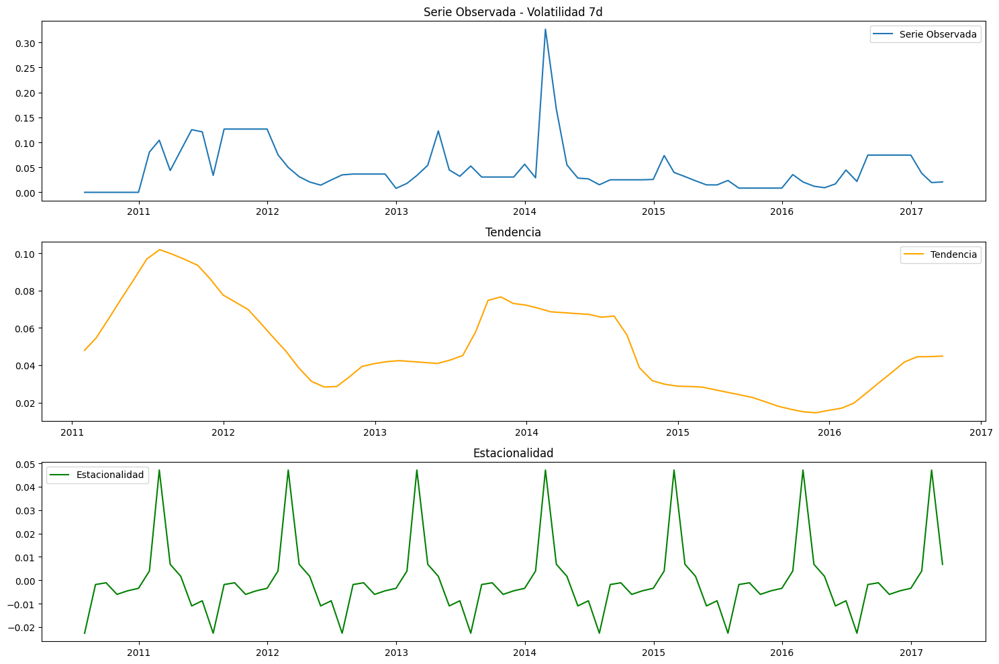
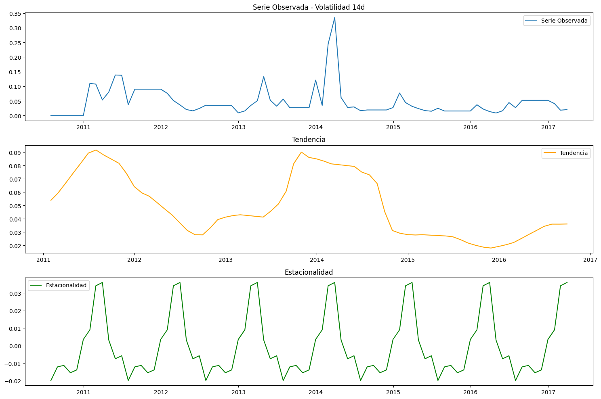
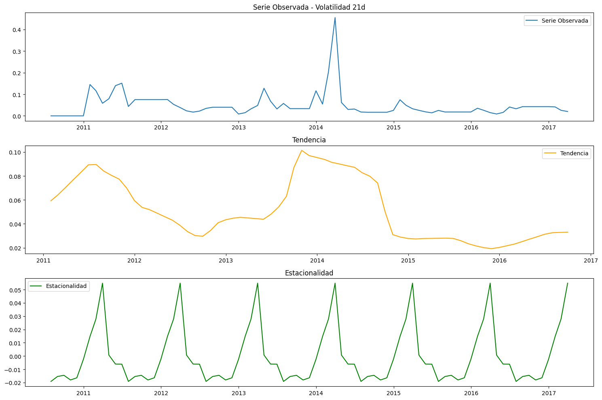
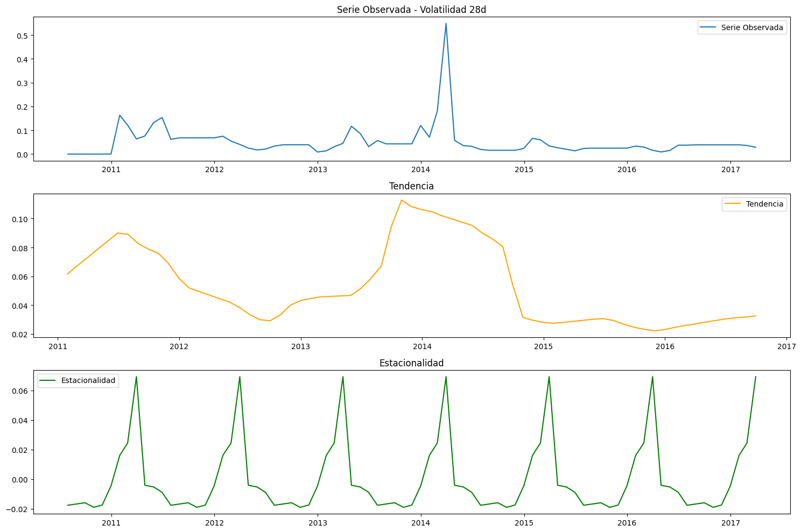
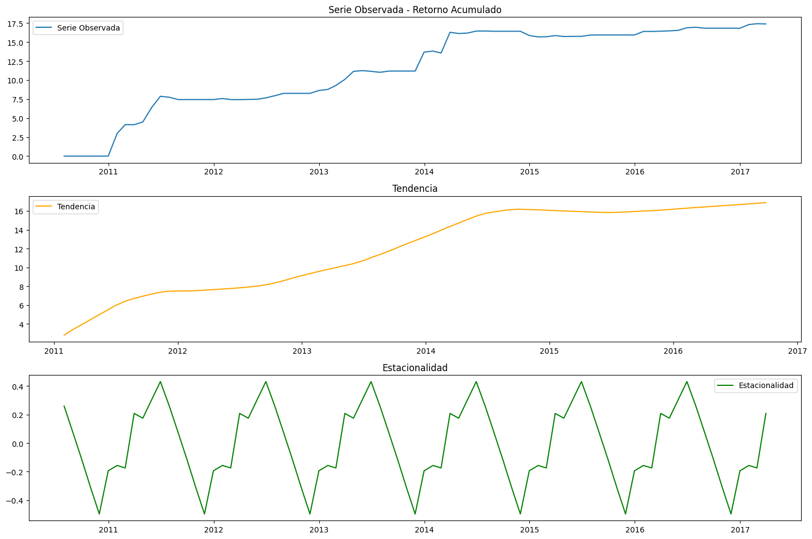
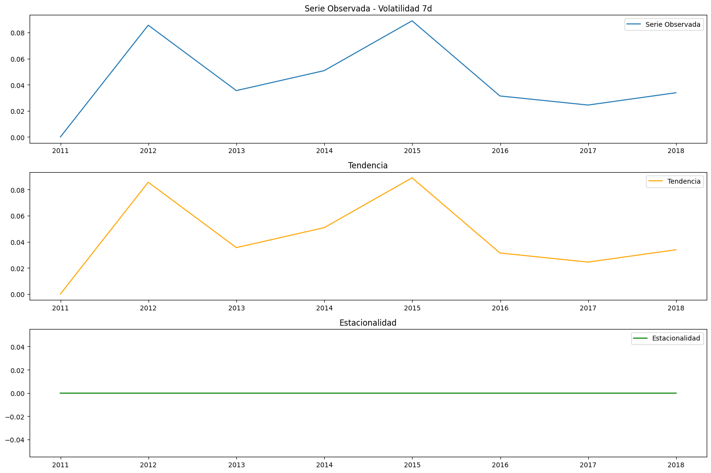
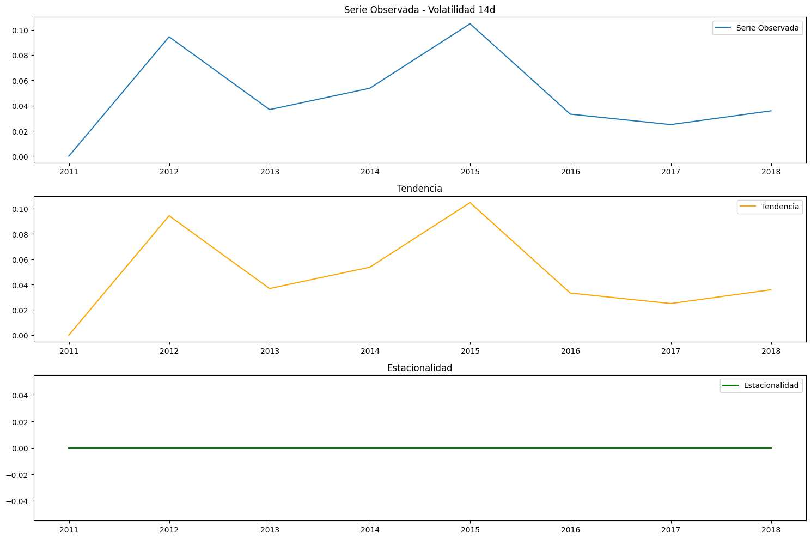
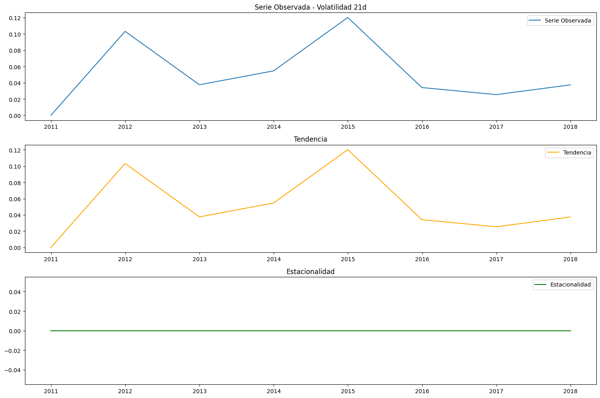
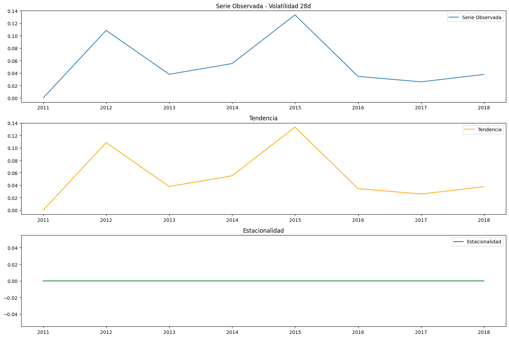
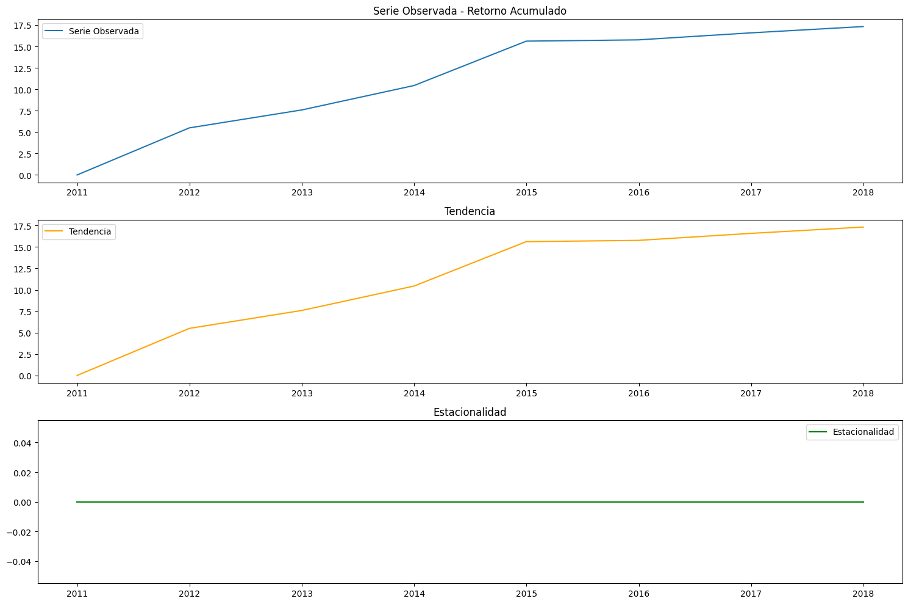
Item 5.#
Estudie estacionariedad de la serie de tiempo usando la ACF estudiada durante el curso, así como también los respectivos test estadísticos tales como Ljung-Box y Dickey Fuller. Aplique además las transformaciones necesarias para convertir la serie de tiempo en estacionaria.
from statsmodels.tsa.stattools import adfuller
def prueba_dickey_fuller(serie, nombre):
resultado = adfuller(serie.dropna())
print(f'Prueba de Dickey-Fuller para {nombre}:')
print(f'Estadístico: {resultado[0]}')
print(f'Valor p: {resultado[1]}')
print(f'Número de retardos utilizados: {resultado[2]}')
print(f'Número de observaciones utilizadas: {resultado[3]}')
print('Valores críticos:')
for key, value in resultado[4].items():
print(f' {key}: {value}')
print('\n')
# Asegúrate de tener tus datos en un DataFrame llamado `df`
prueba_dickey_fuller(bitcoin_data['Volatilidad_7d'], 'Volatilidad 7')
prueba_dickey_fuller(bitcoin_data['Volatilidad_14d'], 'Volatilidad 14')
prueba_dickey_fuller(bitcoin_data['Volatilidad_21d'], 'Volatilidad 21')
prueba_dickey_fuller(bitcoin_data['Volatilidad_28d'], 'Volatilidad 28')
prueba_dickey_fuller(bitcoin_data['Retorno_Acumulado'], 'Retorno_Acumulado')
Prueba de Dickey-Fuller para Volatilidad 7:
Estadístico: -7.008828347437504
Valor p: 7.007396902685089e-10
Número de retardos utilizados: 25
Número de observaciones utilizadas: 2354
Valores críticos:
1%: -3.4331309877552263
5%: -2.8627685921267343
10%: -2.567424032832634
Prueba de Dickey-Fuller para Volatilidad 14:
Estadístico: -7.155515222637294
Valor p: 3.06206889254363e-10
Número de retardos utilizados: 24
Número de observaciones utilizadas: 2355
Valores críticos:
1%: -3.4331298055777806
5%: -2.862768070104647
10%: -2.567423754896525
Prueba de Dickey-Fuller para Volatilidad 21:
Estadístico: -5.305984425063209
Valor p: 5.3215051886520675e-06
Número de retardos utilizados: 21
Número de observaciones utilizadas: 2358
Valores críticos:
1%: -3.4331262650681884
5%: -2.8627665066966537
10%: -2.5674229225037246
Prueba de Dickey-Fuller para Volatilidad 28:
Estadístico: -6.402112795527106
Valor p: 1.9837578377159178e-08
Número de retardos utilizados: 6
Número de observaciones utilizadas: 2373
Valores críticos:
1%: -3.433108696945792
5%: -2.8627587489885524
10%: -2.5674187921338687
Prueba de Dickey-Fuller para Retorno_Acumulado:
Estadístico: -2.488285365602751
Valor p: 0.1183507020393319
Número de retardos utilizados: 9
Número de observaciones utilizadas: 2371
Valores críticos:
1%: -3.433111026504876
5%: -2.8627597776747735
10%: -2.567419339827997
Las pruebas de dickey fuller aplicadas para la volatilidad indican que son estacionarias , es decir que las series no presentan una tendencia signifiactiva y el retorno acumulado no es estacionario, por lo tanto puede tener una tendencia que afecte el comportaminto
from statsmodels.stats.diagnostic import acorr_ljungbox
def prueba_ljung_box(serie, nombre, lags=10):
lb_test = acorr_ljungbox(serie.dropna(), lags=[lags], return_df=True)
print(f'Prueba de Ljung-Box para {nombre}:')
print(lb_test)
print('-' * 50)
prueba_ljung_box(bitcoin_data['Volatilidad_7d'], 'Volatilidad 7d Semanal', lags=6)
prueba_ljung_box(bitcoin_data['Volatilidad_14d'], 'Volatilidad 14d Semanal', lags=6)
prueba_ljung_box(bitcoin_data['Volatilidad_21d'], 'Volatilidad 21d Semanal', lags=6)
prueba_ljung_box(bitcoin_data['Volatilidad_28d'], 'Volatilidad 28d Semanal', lags=6)
prueba_ljung_box(bitcoin_data['Retorno_Acumulado'], 'Retorno acumulado', lags=6)
Prueba de Ljung-Box para Volatilidad 7d Semanal:
lb_stat lb_pvalue
6 7278.848081 0.0
--------------------------------------------------
Prueba de Ljung-Box para Volatilidad 14d Semanal:
lb_stat lb_pvalue
6 10530.957361 0.0
--------------------------------------------------
Prueba de Ljung-Box para Volatilidad 21d Semanal:
lb_stat lb_pvalue
6 11737.71582 0.0
--------------------------------------------------
Prueba de Ljung-Box para Volatilidad 28d Semanal:
lb_stat lb_pvalue
6 12355.817458 0.0
--------------------------------------------------
Prueba de Ljung-Box para Retorno acumulado:
lb_stat lb_pvalue
6 14165.451814 0.0
--------------------------------------------------
Los resultado arrojados por la prueba de Ljung box, no dicen que hay autocorrelación en las series, por lo tanto los errores de predicción no son independientes
import matplotlib.pyplot as plt
from statsmodels.graphics.tsaplots import plot_acf
def graficar_acf(serie, nombre, lags=40):
plt.figure(figsize=(10, 6))
plot_acf(serie.dropna(), lags=lags)
plt.title(f'ACF para {nombre}')
plt.xlabel('Lags')
plt.ylabel('Autocorrelación')
plt.grid(True)
plt.show()
graficar_acf(bitcoin_data['Volatilidad_7d'], 'Volatilidad 7d Semanal', lags=6)
graficar_acf(bitcoin_data['Volatilidad_14d'], 'Volatilidad 14d Semanal', lags=6)
graficar_acf(bitcoin_data['Volatilidad_21d'], 'Volatilidad 21d Semanal', lags=6)
graficar_acf(bitcoin_data['Volatilidad_28d'], 'Volatilidad 28d Semanal', lags=6)
graficar_acf(bitcoin_data['Retorno_Acumulado'], 'Retornoa acumualdo', lags=6)
<Figure size 1000x600 with 0 Axes>
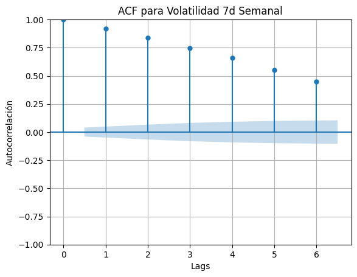
<Figure size 1000x600 with 0 Axes>
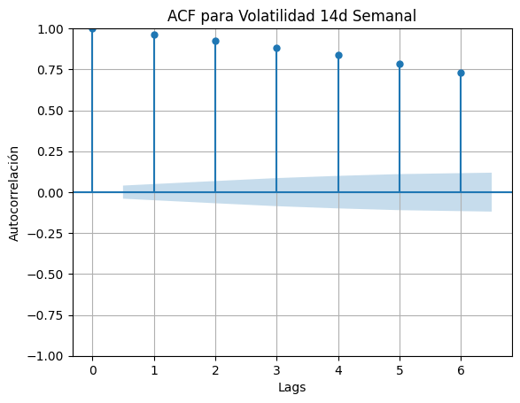
<Figure size 1000x600 with 0 Axes>
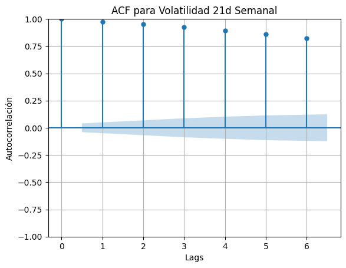
<Figure size 1000x600 with 0 Axes>
<Figure size 1000x600 with 0 Axes>
Las series de voaltilidad muestran una autocorrelación significativa en los primeros lags y el retorno acumulado tambien muestra autocorrelación pero esta menos pronunciada
Item 6.#
Mediante agregación por grupos analice el comportamiento de la media y desviación estándar, agrupando por semanas, días, meses. Además, para estas agrupaciones, calcule estadísticos móviles. Dibuje la distribución de frecuencias para diferentes lags como se realizó en las notas
import matplotlib.pyplot as plt
import pandas as pd
def graficar_media_movil(serie, nombre, window=6):
plt.figure(figsize=(10, 6))
plt.plot(serie, label='Serie Original', alpha=0.5)
media_movil = serie.rolling(window=window).mean()
plt.plot(media_movil, label=f'Media Móvil ({window} días)', color='orange', linewidth=2)
plt.title(f'Comportamiento de la Media para {nombre}')
plt.xlabel('Fecha')
plt.ylabel('Valor')
plt.legend()
plt.grid(True)
plt.show()
graficar_media_movil(bitcoin_data['Volatilidad_7d'], 'Volatilidad 7d Semanal', window=7)
graficar_media_movil(bitcoin_data['Volatilidad_14d'], 'Volatilidad 14d Semanal', window=14)
graficar_media_movil(bitcoin_data['Volatilidad_21d'], 'Volatilidad 21d Semanal', window=21)
graficar_media_movil(bitcoin_data['Volatilidad_28d'], 'Volatilidad 28d Semanal', window=28)
graficar_media_movil(bitcoin_data['Retorno_Acumulado'], 'Retorno acumulado', window=28)
En comparación con la serie original, la media movil, con la window=6, tiene un coportamiento muy similar con la serie original
def graficar_desviacion_estandar_movil(serie, nombre, window=6):
plt.figure(figsize=(10, 6))
desviacion_movil = serie.rolling(window=window).std()
plt.plot(desviacion_movil, label=f'Desviación Estándar Móvil ({window} días)', color='red', linewidth=2)
plt.title(f'Comportamiento de la Desviación Estándar para {nombre}')
plt.xlabel('Fecha')
plt.ylabel('Desviación Estándar')
plt.legend()
plt.grid(True)
plt.show()
graficar_desviacion_estandar_movil(bitcoin_data['Volatilidad_7d'], 'Volatilidad 7d Semanal', window=7)
graficar_desviacion_estandar_movil(bitcoin_data['Volatilidad_14d'], 'Volatilidad 14d Semanal', window=14)
graficar_desviacion_estandar_movil(bitcoin_data['Volatilidad_21d'], 'Volatilidad 21d Semanal', window=21)
graficar_desviacion_estandar_movil(bitcoin_data['Volatilidad_28d'], 'Volatilidad 28d Semanal', window=28)
graficar_desviacion_estandar_movil(bitcoin_data['Retorno_Acumulado'], 'retorno acumulado', window=6)
Se observa que la desviación estandar se mantiene baja hasta el 2014, en este año se registran picos significativos
Item 7.#
Aplique las medias móviles M(2) t (t,t+1) , M(4) t , M(4) t , M(3) (t−1,t+1) t y M(3) a la serie del precio de cierre de BTC-USD. Posteriormente, úselas para remover tendencia y aplique la prueba de Dickey Fuller y LJung Box para verificar si se logró estacionariedad
#M2
bitcoin_data['M2R'] = bitcoin_data['Retorno_Acumulado'].rolling(window=6).mean()
bitcoin_data['M27'] = bitcoin_data['Volatilidad_7d'].rolling(window=7).mean()
bitcoin_data['M214'] = bitcoin_data['Volatilidad_14d'].rolling(window=14).mean()
bitcoin_data['M221'] = bitcoin_data['Volatilidad_21d'].rolling(window=21).mean()
bitcoin_data['M228'] = bitcoin_data['Volatilidad_28d'].rolling(window=28).mean()
prueba_dickey_fuller(bitcoin_data['M2R'], 'M2R')
prueba_dickey_fuller(bitcoin_data['M27'], 'M27')
prueba_dickey_fuller(bitcoin_data['M214'], 'M214')
prueba_dickey_fuller(bitcoin_data['M221'], 'M221')
prueba_dickey_fuller(bitcoin_data['M228'], 'M228')
Prueba de Dickey-Fuller para M2R:
Estadístico: -2.5498714976422336
Valor p: 0.10380659840526935
Número de retardos utilizados: 25
Número de observaciones utilizadas: 2350
Valores críticos:
1%: -3.4331357265371256
5%: -2.8627706846606245
10%: -2.5674251469443186
Prueba de Dickey-Fuller para M27:
Estadístico: -5.710621194186245
Valor p: 7.314081257396099e-07
Número de retardos utilizados: 27
Número de observaciones utilizadas: 2346
Valores críticos:
1%: -3.433140481496303
5%: -2.862772784334684
10%: -2.567426264858143
Prueba de Dickey-Fuller para M214:
Estadístico: -4.365291127210855
Valor p: 0.0003417513785017698
Número de retardos utilizados: 27
Número de observaciones utilizadas: 2339
Valores críticos:
1%: -3.4331488418513514
5%: -2.8627764760555725
10%: -2.567428230414952
Prueba de Dickey-Fuller para M221:
Estadístico: -5.818404386990899
Valor p: 4.2389439070231166e-07
Número de retardos utilizados: 26
Número de observaciones utilizadas: 2333
Valores críticos:
1%: -3.4331560478447343
5%: -2.8627796580313234
10%: -2.567429924573145
Prueba de Dickey-Fuller para M228:
Estadístico: -3.0886578888569027
Valor p: 0.02740402152638193
Número de retardos utilizados: 27
Número de observaciones utilizadas: 2325
Valores críticos:
1%: -3.4331657137546037
5%: -2.8627839262289756
10%: -2.567432197063244
La media movil de los datos de volatilidad arroja que es estacionaria y los de retorno acumulado arroja que no son estacionarios
# (M2(t, t+1))
bitcoin_data['M_2_t_t1R'] = (bitcoin_data['Retorno_Acumulado'] + bitcoin_data['Price'].shift(-1)) / 2
bitcoin_data['M_2_t_t17'] = (bitcoin_data['Volatilidad_7d'] + bitcoin_data['Price'].shift(-1)) / 2
bitcoin_data['M_2_t_t114'] = (bitcoin_data['Volatilidad_14d'] + bitcoin_data['Price'].shift(-1)) / 2
bitcoin_data['M_2_t_t121'] = (bitcoin_data['Volatilidad_21d'] + bitcoin_data['Price'].shift(-1)) / 2
bitcoin_data['M_2_t_t128'] = (bitcoin_data['Volatilidad_28d'] + bitcoin_data['Price'].shift(-1)) / 2
En este caso ninguno de los casos es estacioanrio
prueba_dickey_fuller(bitcoin_data['M_2_t_t1R'], 'M_2_t_t1R')
prueba_dickey_fuller(bitcoin_data['M_2_t_t17'], 'M_2_t_t17')
prueba_dickey_fuller(bitcoin_data['M_2_t_t114'], 'M_2_t_t114')
prueba_dickey_fuller(bitcoin_data['M_2_t_t121'], 'M_2_t_t121')
prueba_dickey_fuller(bitcoin_data['M_2_t_t128'], 'M_2_t_t128')
Prueba de Dickey-Fuller para M_2_t_t1R:
Estadístico: -0.6410722979135228
Valor p: 0.8614287304615798
Número de retardos utilizados: 24
Número de observaciones utilizadas: 2355
Valores críticos:
1%: -3.4331298055777806
5%: -2.862768070104647
10%: -2.567423754896525
Prueba de Dickey-Fuller para M_2_t_t17:
Estadístico: -0.6514360316798514
Valor p: 0.8589310217495993
Número de retardos utilizados: 24
Número de observaciones utilizadas: 2355
Valores críticos:
1%: -3.4331298055777806
5%: -2.862768070104647
10%: -2.567423754896525
Prueba de Dickey-Fuller para M_2_t_t114:
Estadístico: -0.651066823800197
Valor p: 0.8590206122804604
Número de retardos utilizados: 24
Número de observaciones utilizadas: 2355
Valores críticos:
1%: -3.4331298055777806
5%: -2.862768070104647
10%: -2.567423754896525
Prueba de Dickey-Fuller para M_2_t_t121:
Estadístico: -0.6506260211366586
Valor p: 0.8591275166113459
Número de retardos utilizados: 24
Número de observaciones utilizadas: 2355
Valores críticos:
1%: -3.4331298055777806
5%: -2.862768070104647
10%: -2.567423754896525
Prueba de Dickey-Fuller para M_2_t_t128:
Estadístico: -0.6513172645692925
Valor p: 0.8589598462338319
Número de retardos utilizados: 24
Número de observaciones utilizadas: 2355
Valores críticos:
1%: -3.4331298055777806
5%: -2.862768070104647
10%: -2.567423754896525
#M(4)
bitcoin_data['M_4R'] = bitcoin_data['Retorno_Acumulado'].rolling(window=4).mean()
bitcoin_data['M_47'] = bitcoin_data['Volatilidad_7d'].rolling(window=4).mean()
bitcoin_data['M_414'] = bitcoin_data['Volatilidad_14d'].rolling(window=4).mean()
bitcoin_data['M_421'] = bitcoin_data['Volatilidad_21d'].rolling(window=4).mean()
bitcoin_data['M_428'] = bitcoin_data['Volatilidad_28d'].rolling(window=4).mean()
print(bitcoin_data[['Price', 'M_4']].head(10))
Price M_4
Date
2010-07-29 0.1 0.0
2010-07-29 0.1 0.0
2010-07-29 0.1 0.0
2010-07-29 0.1 0.1
2010-07-29 0.1 0.1
2010-07-29 0.1 0.1
2010-07-29 0.1 0.1
2010-07-30 0.1 0.1
2010-07-30 0.1 0.1
2010-07-30 0.1 0.1
prueba_dickey_fuller(bitcoin_data['M_4R'], 'M_4R')
prueba_dickey_fuller(bitcoin_data['M_47'], 'M_47')
prueba_dickey_fuller(bitcoin_data['M_414'], 'M_414')
prueba_dickey_fuller(bitcoin_data['M_421'], 'M_421')
prueba_dickey_fuller(bitcoin_data['M_428'], 'M_428')
Prueba de Dickey-Fuller para M_4R:
Estadístico: -2.628955608571153
Valor p: 0.0871591741753287
Número de retardos utilizados: 27
Número de observaciones utilizadas: 2350
Valores críticos:
1%: -3.4331357265371256
5%: -2.8627706846606245
10%: -2.5674251469443186
Prueba de Dickey-Fuller para M_47:
Estadístico: -6.220366979057456
Valor p: 5.241329892895465e-08
Número de retardos utilizados: 26
Número de observaciones utilizadas: 2350
Valores críticos:
1%: -3.4331357265371256
5%: -2.8627706846606245
10%: -2.5674251469443186
Prueba de Dickey-Fuller para M_414:
Estadístico: -5.753001098024762
Valor p: 5.90689866374898e-07
Número de retardos utilizados: 26
Número de observaciones utilizadas: 2350
Valores críticos:
1%: -3.4331357265371256
5%: -2.8627706846606245
10%: -2.5674251469443186
Prueba de Dickey-Fuller para M_421:
Estadístico: -5.587311927658694
Valor p: 1.3537265868815268e-06
Número de retardos utilizados: 27
Número de observaciones utilizadas: 2349
Valores críticos:
1%: -3.4331369137570684
5%: -2.8627712089083226
10%: -2.5674254260655647
Prueba de Dickey-Fuller para M_428:
Estadístico: -4.4984600481880115
Valor p: 0.0001979036291601888
Número de retardos utilizados: 27
Número de observaciones utilizadas: 2349
Valores críticos:
1%: -3.4331369137570684
5%: -2.8627712089083226
10%: -2.5674254260655647
Las medias moviles de los retorno acumulados es no estacioanrios y las de la volatilidad son estacionarias
# (M_4_(t, t+1))
bitcoin_data['M_4_t_t1R'] = (
bitcoin_data['Retorno_Acumulado'].rolling(window=4).mean() +
bitcoin_data['Retorno_Acumulado'].shift(-4).rolling(window=4).mean()
) / 2
bitcoin_data['M_4_t_t17'] = (
bitcoin_data['Volatilidad_7d'].rolling(window=4).mean() +
bitcoin_data['Volatilidad_7d'].shift(-4).rolling(window=4).mean()
) / 2
bitcoin_data['M_4_t_t114'] = (
bitcoin_data['Volatilidad_14d'].rolling(window=4).mean() +
bitcoin_data['Volatilidad_14d'].shift(-4).rolling(window=4).mean()
) / 2
bitcoin_data['M_4_t_t121'] = (
bitcoin_data['Volatilidad_21d'].rolling(window=4).mean() +
bitcoin_data['Volatilidad_21d'].shift(-4).rolling(window=4).mean()
) / 2
bitcoin_data['M_4_t_t128'] = (
bitcoin_data['Volatilidad_28d'].rolling(window=4).mean() +
bitcoin_data['Volatilidad_28d'].shift(-4).rolling(window=4).mean()
) / 2
prueba_dickey_fuller(bitcoin_data['M_4_t_t1R'], 'M_4_t_t1R')
prueba_dickey_fuller(bitcoin_data['M_4_t_t17'], 'M_4_t_t17')
prueba_dickey_fuller(bitcoin_data['M_4_t_t114'], 'M_4_t_t114')
prueba_dickey_fuller(bitcoin_data['M_4_t_t121'], 'M_4_t_t121')
prueba_dickey_fuller(bitcoin_data['M_4_t_t128'], 'M_4_t_t128')
Prueba de Dickey-Fuller para M_4_t_t1R:
Estadístico: -2.5157806169626484
Valor p: 0.11168179056091193
Número de retardos utilizados: 25
Número de observaciones utilizadas: 2348
Valores críticos:
1%: -3.4331381019893814
5%: -2.862771733602851
10%: -2.567425705424748
Prueba de Dickey-Fuller para M_4_t_t17:
Estadístico: -6.2398725820832075
Valor p: 4.725836606939645e-08
Número de retardos utilizados: 26
Número de observaciones utilizadas: 2346
Valores críticos:
1%: -3.433140481496303
5%: -2.862772784334684
10%: -2.567426264858143
Prueba de Dickey-Fuller para M_4_t_t114:
Estadístico: -5.262810956542021
Valor p: 6.535299871550379e-06
Número de retardos utilizados: 27
Número de observaciones utilizadas: 2345
Valores críticos:
1%: -3.4331416727735093
5%: -2.862773310373135
10%: -2.567426544932965
Prueba de Dickey-Fuller para M_4_t_t121:
Estadístico: -6.230149173308947
Valor p: 4.9762511094765934e-08
Número de retardos utilizados: 25
Número de observaciones utilizadas: 2347
Valores críticos:
1%: -3.4331392912353604
5%: -2.8627722587447804
10%: -2.5674259850221723
Prueba de Dickey-Fuller para M_4_t_t128:
Estadístico: -4.518400759586434
Valor p: 0.00018212146788306363
Número de retardos utilizados: 27
Número de observaciones utilizadas: 2345
Valores críticos:
1%: -3.4331416727735093
5%: -2.862773310373135
10%: -2.567426544932965
Las medias moviles de los retorno acumulados es no estacioanrios y las de la volatilidad son estacionarias
bitcoin_data['M_3R'] = bitcoin_data['Retorno_Acumulado'].rolling(window=3).mean()
bitcoin_data['M_37'] = bitcoin_data['Volatilidad_7d'].rolling(window=3).mean()
bitcoin_data['M_314'] = bitcoin_data['Volatilidad_14d'].rolling(window=3).mean()
bitcoin_data['M_321'] = bitcoin_data['Volatilidad_21d'].rolling(window=3).mean()
bitcoin_data['M_328'] = bitcoin_data['Volatilidad_28d'].rolling(window=3).mean()
prueba_dickey_fuller(bitcoin_data['M_3R'], 'M_3R')
prueba_dickey_fuller(bitcoin_data['M_37'], 'M_37')
prueba_dickey_fuller(bitcoin_data['M_314'], 'M_314')
prueba_dickey_fuller(bitcoin_data['M_321'], 'M_321')
prueba_dickey_fuller(bitcoin_data['M_328'], 'M_328')
Prueba de Dickey-Fuller para M_3R:
Estadístico: -2.631660604059177
Valor p: 0.08662860548476525
Número de retardos utilizados: 27
Número de observaciones utilizadas: 2351
Valores críticos:
1%: -3.43313454032826
5%: -2.862770160859186
10%: -2.5674248680607055
Prueba de Dickey-Fuller para M_37:
Estadístico: -6.204151503352991
Valor p: 5.711620860892763e-08
Número de retardos utilizados: 27
Número de observaciones utilizadas: 2350
Valores críticos:
1%: -3.4331357265371256
5%: -2.8627706846606245
10%: -2.5674251469443186
Prueba de Dickey-Fuller para M_314:
Estadístico: -5.815056874903313
Valor p: 4.311803707869062e-07
Número de retardos utilizados: 27
Número de observaciones utilizadas: 2350
Valores críticos:
1%: -3.4331357265371256
5%: -2.8627706846606245
10%: -2.5674251469443186
Prueba de Dickey-Fuller para M_321:
Estadístico: -5.34030471976007
Valor p: 4.515551544510371e-06
Número de retardos utilizados: 26
Número de observaciones utilizadas: 2351
Valores críticos:
1%: -3.43313454032826
5%: -2.862770160859186
10%: -2.5674248680607055
Prueba de Dickey-Fuller para M_328:
Estadístico: -4.456835188721716
Valor p: 0.00023513819694635343
Número de retardos utilizados: 27
Número de observaciones utilizadas: 2350
Valores críticos:
1%: -3.4331357265371256
5%: -2.8627706846606245
10%: -2.5674251469443186
Las medias moviles de los retorno acumulados es no estacioanrios y las de la volatilidad son estacionarias
#M3 (t-1, T+1)
bitcoin_data['M_3_t-1_t+1R'] = bitcoin_data['Retorno_Acumulado'].shift(2)
bitcoin_data['M_3_t-1_t+17'] = bitcoin_data['Volatilidad_7d'].shift(2)
bitcoin_data['M_3_t-1_t+114'] = bitcoin_data['Volatilidad_14d'].shift(2)
bitcoin_data['M_3_t-1_t+121'] = bitcoin_data['Volatilidad_21d'].shift(2)
bitcoin_data['M_3_t-1_t+128'] = bitcoin_data['Volatilidad_28d'].shift(2)
prueba_dickey_fuller(bitcoin_data['M_3_t-1_t+1R'], 'M_3_t-1_t+1R')
prueba_dickey_fuller(bitcoin_data['M_3_t-1_t+17'], 'M_3_t-1_t+17')
prueba_dickey_fuller(bitcoin_data['M_3_t-1_t+114'], 'M_3_t-1_t+114')
prueba_dickey_fuller(bitcoin_data['M_4_t_t1R'], 'M_4_t_t1R')
prueba_dickey_fuller(bitcoin_data['M_3_t-1_t+121'], 'M_3_t-1_t+121')
prueba_dickey_fuller(bitcoin_data['M_3_t-1_t+128'], 'M_3_t-1_t+128')
Prueba de Dickey-Fuller para M_3_t-1_t+1R:
Estadístico: -2.4918232279291925
Valor p: 0.11747651896272321
Número de retardos utilizados: 9
Número de observaciones utilizadas: 2369
Valores críticos:
1%: -3.433113360001643
5%: -2.862760808098992
10%: -2.567419888447605
Prueba de Dickey-Fuller para M_3_t-1_t+17:
Estadístico: -7.007544009947936
Valor p: 7.058164378223576e-10
Número de retardos utilizados: 25
Número de observaciones utilizadas: 2353
Valores críticos:
1%: -3.433132170938598
5%: -2.8627691145928087
10%: -2.567424311005166
Prueba de Dickey-Fuller para M_3_t-1_t+114:
Estadístico: -7.154606075792193
Valor p: 3.077883072627129e-10
Número de retardos utilizados: 24
Número de observaciones utilizadas: 2354
Valores críticos:
1%: -3.4331309877552263
5%: -2.8627685921267343
10%: -2.567424032832634
Prueba de Dickey-Fuller para M_4_t_t1R:
Estadístico: -2.5157806169626484
Valor p: 0.11168179056091193
Número de retardos utilizados: 25
Número de observaciones utilizadas: 2348
Valores críticos:
1%: -3.4331381019893814
5%: -2.862771733602851
10%: -2.567425705424748
Prueba de Dickey-Fuller para M_3_t-1_t+121:
Estadístico: -5.305384607188238
Valor p: 5.336763499156501e-06
Número de retardos utilizados: 21
Número de observaciones utilizadas: 2357
Valores críticos:
1%: -3.4331274442355406
5%: -2.862767027390171
10%: -2.567423199732371
Prueba de Dickey-Fuller para M_3_t-1_t+128:
Estadístico: -6.400989204101264
Valor p: 1.9958020503588313e-08
Número de retardos utilizados: 6
Número de observaciones utilizadas: 2372
Valores críticos:
1%: -3.4331098612337465
5%: -2.862759263114688
10%: -2.567419065865394
Las medias moviles de los retorno acumulados es no estacioanrios y las de la volatilidad son estacionarias